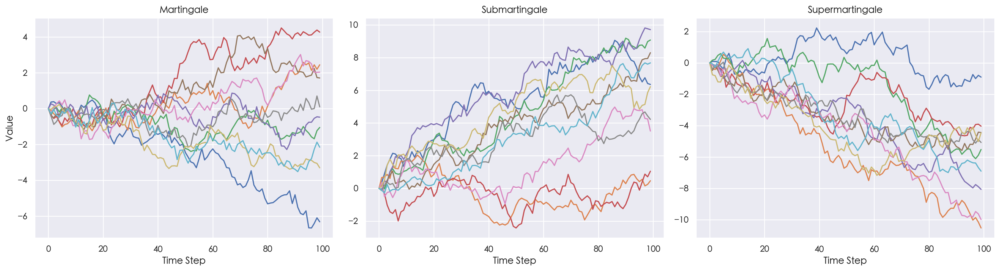
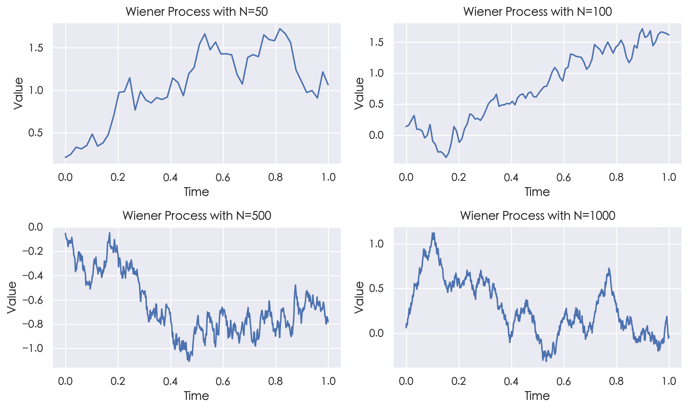
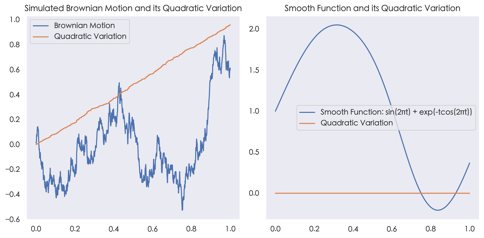
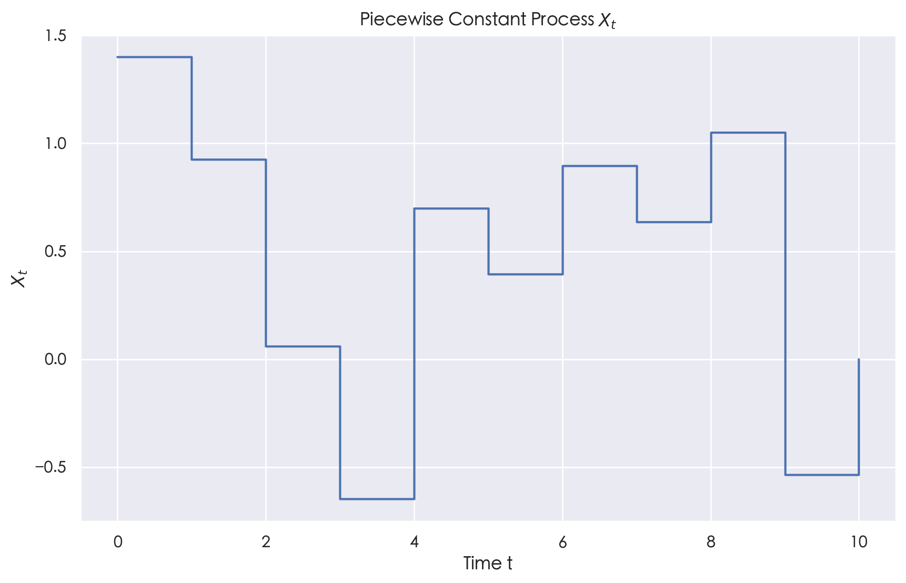
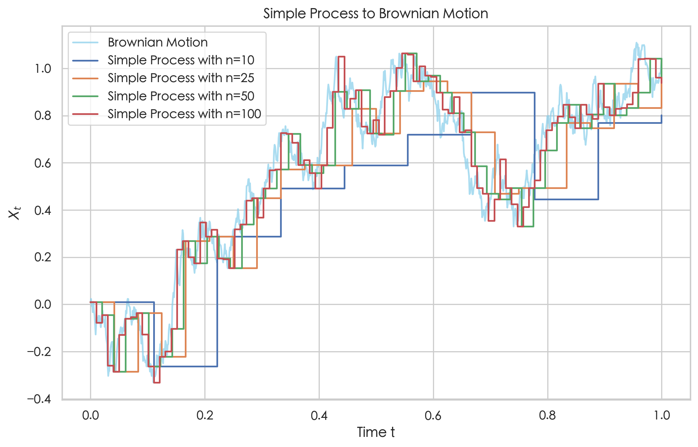
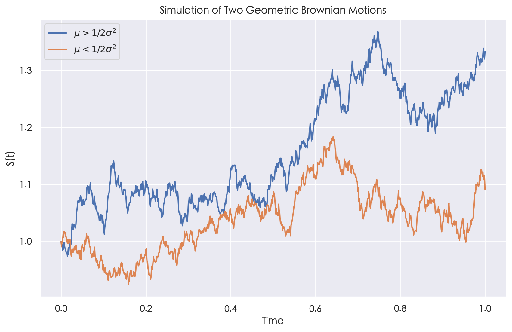

Math Preliminaries
For continuous-time financial models, we require several foundational concepts from stochastic calculus. This chapter introduces:
- Stochastic Processes and Martingales,
- Brownian Motion (Wiener Process),
- Quadratic Variation and the Itô Integral,
- Itô's Lemma (One-Dimensional and Multi-Dimensional) and the Product Rule,
- Geometric Brownian Motion and Stochastic Differential Equations,
- Change of Measure (Girsanov's Theorem), Martingale Representation, and the Feynman–Kac Theorem,
- Jump-Diffusion Processes (Merton's Model),
- Fractional Brownian Motion and Rough Paths.
03.1 Stochastic Processes
A stochastic process is a collection of random variables $\{X_t : t \in T\}$ defined on a common probability space $(\Omega, \mathcal{F}, \mathbb{P})$, where $T$ is an index set (typically discrete, such as $\mathbb{N}_0$, or continuous, such as $[0, \infty)$ or $[0, T]$).
Given an integrable random variable $Y$ (i.e., $\mathbb{E}[|Y|] < \infty$) defined on a probability space $(\Omega, \mathcal{F}, \mathbb{P})$ and a sub-$\sigma$-field $\mathcal{G} \subseteq \mathcal{F}$, the conditional expectation of $Y$ given $\mathcal{G}$ is the almost surely unique random variable $\mathbb{E}[Y \mid \mathcal{G}]$ satisfying:
- $\mathbb{E}[Y \mid \mathcal{G}]$ is $\mathcal{G}$-measurable;
- $\mathbb{E}[YZ] = \mathbb{E}\big[\mathbb{E}[Y \mid \mathcal{G}] Z\big]$ for every bounded, $\mathcal{G}$-measurable random variable $Z$.
Intuitively, $\mathbb{E}[Y \mid \mathcal{G}]$ is an averaging of $Y$ that smooths out information finer than that contained in $\mathcal{G}$.
A filtration on a measurable space $(\Omega, \mathcal{F})$ is an increasing family of sub-$\sigma$-fields $\{\mathcal{F}_t\}_{t \ge 0}$ of $\mathcal{F}$, meaning that \[ \mathcal{F}_s \subseteq \mathcal{F}_t \subseteq \mathcal{F} \quad \text{for all } 0 \le s \le t. \] A stochastic process $\{X_t\}_{t \ge 0}$ is said to be adapted to the filtration $\{\mathcal{F}_t\}_{t \ge 0}$ if $X_t$ is $\mathcal{F}_t$-measurable for every $t \ge 0$.
As a canonical example, given a stochastic process $\{X_t\}_{t \ge 0}$, the natural filtration generated by $\{X_t\}$ is defined by \[ \mathcal{F}_t^X = \sigma(X_s : 0 \le s \le t), \quad t \ge 0, \] which encodes all information about the path of $X$ up to time $t$. When the underlying process is clear from context, we simply write $\mathcal{F}_t$.
Recall that a $\sigma$-field (or $\sigma$-algebra) on a set $\Omega$ is a nonempty collection of subsets of $\Omega$ closed under complements, countable unions, and countable intersections. A filtration models the progressive accumulation of information over time.
Martingales
Let $\{\mathcal{F}_t\}$ be a filtration on $(\Omega, \mathcal{F}, \mathbb{P})$. A stochastic process $\{X_t\}$ is called a martingale with respect to $\{\mathcal{F}_t\}$ if:
- $X_t$ is $\mathcal{F}_t$-measurable for all $t$ (i.e., $\{X_t\}$ is adapted to $\{\mathcal{F}_t\}$);
- $\mathbb{E}[|X_t|] < \infty$ for all $t$;
- $\mathbb{E}[X_t \mid \mathcal{F}_s] = X_s$ almost surely (a.s.) for all $s \le t$.
If the equality in Condition 3 is replaced by $\mathbb{E}[X_t \mid \mathcal{F}_s] \le X_s$ a.s. for all $s \le t$, then $\{X_t\}$ is a supermartingale. If it is replaced by $\mathbb{E}[X_t \mid \mathcal{F}_s] \ge X_s$ a.s. for all $s \le t$, then $\{X_t\}$ is a submartingale.
Simulations comparing a martingale, a supermartingale, and a submartingale are shown in Figure 03.1.

As illustrated in Figure 03.1, supermartingales exhibit a downward drift on average, whereas submartingales exhibit an upward drift. A martingale has constant expectation over time:
If $\{X_t\}_{t \ge 0}$ is a martingale with respect to $\{\mathcal{F}_t\}_{t \ge 0}$, then $\mathbb{E}[X_t] = \mathbb{E}[X_0]$ for all $t \ge 0$.
Taking expectations on both sides of $\mathbb{E}[X_t \mid \mathcal{F}_0] = X_0$ a.s. and applying the tower property of conditional expectation yields $\mathbb{E}[X_t] = \mathbb{E}[\mathbb{E}[X_t \mid \mathcal{F}_0]] = \mathbb{E}[X_0]$. ◻
If $Z$ is an integrable random variable ($\mathbb{E}[|Z|] < \infty$) and $\{\mathcal{F}_t\}_{t \ge 0}$ is a filtration, then $X_t = \mathbb{E}[Z \mid \mathcal{F}_t]$ defines a martingale. Indeed, $X_t$ is $\mathcal{F}_t$-measurable, $\mathbb{E}[|X_t|] \le \mathbb{E}[|Z|] < \infty$ by Jensen's inequality, and for every $0 \le s \le t < \infty$, the tower property gives, almost surely, \[ \mathbb{E}[X_t \mid \mathcal{F}_s] = \mathbb{E}\big[\mathbb{E}[Z \mid \mathcal{F}_t] \mid \mathcal{F}_s\big] = \mathbb{E}[Z \mid \mathcal{F}_s] = X_s. \]
Consider a discrete-time binomial model with constant risk-free rate $r > 0$ and time step $\Delta t > 0$. Let $\{X_n\}_{n \ge 1}$ be a sequence of i.i.d. random variables such that \[ X_{n+1} = \begin{cases} u & \text{with probability } p, \\ d & \text{with probability } 1-p, \end{cases} \qquad n = 0, 1, 2, \dots, \] where $0 < d < e^{r\Delta t} < u$, and suppose the stock price evolves as $S_{n+1} = X_{n+1} S_n$ with deterministic initial price $S_0 > 0$. Let $\mathcal{F}_n = \sigma(S_0, S_1, \dots, S_n)$ be the natural filtration, so that $X_{n+1}$ is independent of $\mathcal{F}_n$. Consider the discounted stock price process \[ M_n = e^{-r n \Delta t} S_n, \quad n \ge 0. \] Setting $\mu = \mathbb{E}[X_{n+1}]$ and using the $\mathcal{F}_n$-measurability of $S_n$ together with the independence of $X_{n+1}$ from $\mathcal{F}_n$, we compute
$$\begin{aligned} \mathbb{E}[M_{n+1} \mid \mathcal{F}_n] &= \mathbb{E}\big[e^{-r(n+1)\Delta t} X_{n+1} S_n \mid \mathcal{F}_n\big] \\ &= e^{-r(n+1)\Delta t} S_n \, \mathbb{E}[X_{n+1} \mid \mathcal{F}_n] \\ &= e^{-r(n+1)\Delta t} S_n \mu. \end{aligned}$$For $\{M_n\}_{n \ge 0}$ to be a martingale, we require $\mathbb{E}[M_{n+1} \mid \mathcal{F}_n] = M_n = e^{-r n \Delta t} S_n$, which holds if and only if $\mu = e^{r\Delta t}$. Since $\mu = p u + (1-p) d$, solving for $p$ yields \[ p = \frac{e^{r\Delta t} - d}{u - d}. \] Thus, under the risk-neutral probability $p$, the discounted stock price process $\{M_n\}_{n \ge 0}$ is a martingale.
03.2 Brownian Motion (Wiener Process)
A stochastic process $W = \{W_t\}_{t \ge 0}$ is called a Wiener process (or standard Brownian motion) if:
- $W_0 = 0$ almost surely;
- $W$ has independent increments: for any finite collection of times $0 \le t_0 < t_1 < \dots < t_m$, the increments $W_{t_1} - W_{t_0}, W_{t_2} - W_{t_1}, \dots, W_{t_m} - W_{t_{m-1}}$ are mutually independent;
- $W$ has stationary Gaussian increments: for all $0 \le s < t$, $W_t - W_s \sim \mathcal{N}(0, t-s)$;
- Sample paths $t \mapsto W_t$ are continuous almost surely.
In particular, Conditions 2 and 3 imply:
- Stationarity of increments: For any $t \ge 0$ and $\Delta t > 0$, $W_{t+\Delta t} - W_t$ and $W_{\Delta t} - W_0 = W_{\Delta t}$ share the same distribution $\mathcal{N}(0, \Delta t)$.
- Mutual independence of increments: For any $0 \le t_0 < t_1 < \dots < t_m < \infty$, the random variables $W_{t_1} - W_{t_0}, W_{t_2} - W_{t_1}, \dots, W_{t_m} - W_{t_{m-1}}$ are mutually independent.
The following classical result establishes that the Wiener process is the scaling limit of a centered random walk with finite variance.
Let $X_1, X_2, \dots$ be i.i.d. random variables with mean $0$ and variance $1$, and define the random walk $S_n = \sum_{i=1}^n X_i$ (with $S_0 = 0$). Define the rescaled process \[ W_t^{(n)} = \frac{S_{\lfloor n t \rfloor}}{\sqrt{n}}, \quad t \in [0, T]. \] Then, as $n \to \infty$, $\{W_t^{(n)}\}_{t \in [0, T]}$ converges weakly (in distribution) to a standard Wiener process $\{W_t\}_{t \in [0, T]}$.
Convergence in Donsker's Theorem is weak convergence in path space (the Skorokhod space $D[0, T]$, or $C[0, T]$ for the continuous piecewise-linear interpolation), not pointwise convergence on $\Omega$.
Using the Gaussian increment property, we can readily simulate sample paths of a Wiener process on a discrete time grid; see the companion script in code/ch03_math_preliminaries.py for the Python implementation used to generate Figure 03.2.

Let $\{W_t\}_{t \ge 0}$ be a standard Wiener process with natural filtration $\{\mathcal{F}_t\}_{t \ge 0}$. Then:
- For all $s, t \ge 0$, $\Cov(W_s, W_t) = \min(s, t)$.
- $\{W_t\}_{t \ge 0}$ is a martingale with respect to $\{\mathcal{F}_t\}_{t \ge 0}$.
- Almost every sample path $t \mapsto W_t$ is continuous everywhere, yet nowhere differentiable.
- Without loss of generality, assume $0 \le s \le t$. Since $\mathbb{E}[W_s] = \mathbb{E}[W_t] = 0$ and $W_t - W_s$ is independent of $W_s$, we have \[ \Cov(W_s, W_t) = \mathbb{E}[W_s W_t] = \mathbb{E}\big[W_s(W_t - W_s) + W_s^2\big] = \mathbb{E}[W_s]\mathbb{E}[W_t - W_s] + \mathbb{E}[W_s^2] = 0 + s = \min(s, t). \]
- Clearly $W_t$ is $\mathcal{F}_t$-measurable and $\mathbb{E}[|W_t|] \le (\mathbb{E}[W_t^2])^{1/2} = \sqrt{t} < \infty$. For any $0 \le s \le t$, since $W_t - W_s$ is independent of $\mathcal{F}_s$ and $W_s$ is $\mathcal{F}_s$-measurable, \[ \mathbb{E}[W_t \mid \mathcal{F}_s] = \mathbb{E}[W_t - W_s \mid \mathcal{F}_s] + \mathbb{E}[W_s \mid \mathcal{F}_s] = \mathbb{E}[W_t - W_s] + W_s = 0 + W_s = W_s \quad \text{a.s.} \]
- A rigorous proof of almost-sure nowhere differentiability is due to Paley, Wiener, and Zygmund (1933) and is omitted here; see Remark 03.3 for the scaling intuition.
Because $W_{t+h} - W_t \sim \mathcal{N}(0, |h|)$, the typical magnitude of the increment is of order $\sqrt{|h|}$. Hence the difference quotient behaves as \[ \left|\frac{W_{t+h} - W_t}{h}\right| \sim \frac{\sqrt{|h|}}{|h|} = |h|^{-1/2} \to \infty \quad \text{as } h \to 0, \] which heuristically explains why Brownian sample paths are too rough to be differentiable at any point.
For any ordered times $0 \le t_1 \le t_2 \le \dots \le t_n$, the random vector $(W_{t_1}, W_{t_2}, \dots, W_{t_n})^\top$ is multivariate Gaussian with zero mean and covariance matrix \[ \Cov(W_{t_1}, W_{t_2}, \dots, W_{t_n}) = \begin{pmatrix} t_1 & t_1 & \cdots & t_1 \\ t_1 & t_2 & \cdots & t_2 \\ \vdots & \vdots & \ddots & \vdots \\ t_1 & t_2 & \cdots & t_n \end{pmatrix}. \]
For any constant $a > 0$, the rescaled process $X_t = \frac{1}{a} W_{a^2 t}$ ($t \ge 0$) is a standard Wiener process.
We verify the four defining properties of Definition 03.5:
- $X_0 = \frac{1}{a} W_0 = 0$ a.s.
- For any $0 \le t_0 < t_1 < \dots < t_m$, we have $0 \le a^2 t_0 < a^2 t_1 < \dots < a^2 t_m$. By the independent increments of $W$, the increments $W_{a^2 t_k} - W_{a^2 t_{k-1}}$ ($k = 1, \dots, m$) are mutually independent, and hence so are $X_{t_k} - X_{t_{k-1}} = \frac{1}{a}(W_{a^2 t_k} - W_{a^2 t_{k-1}})$.
- For $0 \le s < t$, $W_{a^2 t} - W_{a^2 s} \sim \mathcal{N}(0, a^2(t-s))$, so $X_t - X_s = \frac{1}{a}(W_{a^2 t} - W_{a^2 s}) \sim \mathcal{N}(0, t-s)$.
- Almost every path $t \mapsto X_t$ is a composition of continuous functions ($t \mapsto a^2 t \mapsto W_{a^2 t} \mapsto \frac{1}{a} W_{a^2 t}$), hence continuous a.s.
For any fixed $t_0 \ge 0$, the shifted process $X_t = W_{t_0 + t} - W_{t_0}$ ($t \ge 0$) is a standard Wiener process.
We again verify the four properties of Definition 03.5:
- $X_0 = W_{t_0} - W_{t_0} = 0$ a.s.
- For any $0 \le s_0 < s_1 < \dots < s_m$, we have $t_0 \le t_0 + s_0 < t_0 + s_1 < \dots < t_0 + s_m$, and $X_{s_k} - X_{s_{k-1}} = W_{t_0 + s_k} - W_{t_0 + s_{k-1}}$ ($k = 1, \dots, m$) are mutually independent by the independent increments of $W$.
- For $0 \le s < t$, $X_t - X_s = W_{t_0 + t} - W_{t_0 + s} \sim \mathcal{N}(0, t - s)$.
- Almost every path $t \mapsto W_{t_0 + t} - W_{t_0}$ is continuous as a translation of a continuous path.
A related symmetry is the true time reversal property: for any fixed horizon $T > 0$, the process $\widetilde{W}_t = W_T - W_{T-t}$ ($0 \le t \le T$) is also a standard Wiener process on $[0, T]$.
A Wiener process $\{W_t\}_{t \ge 0}$ possesses the Markov property: for any $0 \le s < t$, the conditional distribution of $W_t$ given $\mathcal{F}_s$ coincides with the conditional distribution of $W_t$ given $W_s$.
Write $W_t = W_s + (W_t - W_s)$. Because $W_t - W_s$ is independent of $\mathcal{F}_s$ and distributed as $\mathcal{N}(0, t-s)$, while $W_s$ is $\mathcal{F}_s$-measurable, the conditional distribution of $W_t$ given $\mathcal{F}_s$ is $\mathcal{N}(W_s, t-s)$, which depends on $\mathcal{F}_s$ solely through $W_s$. ◻
For any $0 \le s < t$, conditional on $W_s = w_s$, the random variable $W_t$ has transition density \[ p(t-s; w_s, x) = \frac{1}{\sqrt{2\pi(t-s)}} \exp\left(-\frac{(x - w_s)^2}{2(t-s)}\right), \quad x \in \mathbb{R}. \]
03.3 Quadratic Variation
The quadratic variation of a stochastic process $\{X_t\}_{t \ge 0}$ over $[0, T]$ is defined as \[ \langle X, X \rangle[T] = \lim_{\|\Pi\| \to 0} \sum_{i=1}^{n} \left(X_{t_i} - X_{t_{i-1}}\right)^2, \] whenever the limit exists (in probability), where $\Pi = \{0 = t_0 < t_1 < \dots < t_n = T\}$ is a partition of $[0, T]$ with mesh $\|\Pi\| = \max_{1 \le i \le n} (t_i - t_{i-1})$.
Similarly, the quadratic covariation of two processes $X$ and $Y$ and the total variation of $X$ over $[0, T]$ are defined by
$$\begin{aligned} \langle X, Y \rangle[T] &= \lim_{\|\Pi\| \to 0} \sum_{i=1}^{n} \left(X_{t_i} - X_{t_{i-1}}\right)\left(Y_{t_i} - Y_{t_{i-1}}\right), \\ |X|[T] &= \lim_{\|\Pi\| \to 0} \sum_{i=1}^{n} \left|X_{t_i} - X_{t_{i-1}}\right|. \end{aligned}$$If $f : [0, T] \to \mathbb{R}$ is continuously differentiable (i.e., $f' \in C[0, T]$), then its quadratic variation vanishes: $\langle f, f \rangle[T] = 0$.
For any partition $\Pi = \{0 = t_0 < t_1 < \dots < t_n = T\}$, the Mean Value Theorem yields points $\xi_i \in (t_{i-1}, t_i)$ such that $f(t_i) - f(t_{i-1}) = f'(\xi_i)(t_i - t_{i-1})$. Therefore,
$$\begin{aligned} \sum_{i=1}^{n} \left(f(t_i) - f(t_{i-1})\right)^2 &= \sum_{i=1}^{n} \big(f'(\xi_i)\big)^2 (t_i - t_{i-1})^2 \\ &\le \|\Pi\| \sum_{i=1}^{n} \big(f'(\xi_i)\big)^2 (t_i - t_{i-1}). \end{aligned}$$Since $f'$ is continuous on $[0, T]$, the Riemann sum $\sum_{i=1}^n (f'(\xi_i))^2 (t_i - t_{i-1})$ converges to $\int_0^T (f'(t))^2 \dd t < \infty$ as $\|\Pi\| \to 0$. Multiplying by $\|\Pi\| \to 0$ gives $\langle f, f \rangle[T] = 0$. ◻
Because a Brownian motion is almost surely nowhere differentiable, its quadratic variation need not be zero. Indeed, the non-vanishing quadratic variation of Brownian motion is the key feature underlying the Itô integral and Itô's Lemma.
For a standard Wiener process $\{W_t\}_{t \ge 0}$, the following quadratic variations and covariations hold over $[0, T]$ (in the $L^2$ sense):
- $\langle W, W \rangle[T] = T$, written informally in differential form as $\dd W_t \dd W_t = \dd t$;
- $\langle W, t \rangle[T] = 0$, written informally as $\dd W_t \dd t = 0$;
- $\langle t, t \rangle[T] = 0$, written informally as $\dd t \dd t = 0$.
To prove Theorem 03.6, we recall convergence in $L^2$.
A sequence of square-integrable random variables $\{X_n\}$ converges in $L^2$ to a random variable $X$, written $X_n \xrightarrow{L^2} X$, if \[ \lim_{n \to \infty} \mathbb{E}\big[(X_n - X)^2\big] = 0. \] In particular, when the limit $a \in \mathbb{R}$ is deterministic, the identity \[ \mathbb{E}\big[(X_n - a)^2\big] = \Var(X_n) + \big(\mathbb{E}[X_n] - a\big)^2 \] shows that $X_n \xrightarrow{L^2} a$ if and only if $\mathbb{E}[X_n] \to a$ and $\Var(X_n) \to 0$.
Let $\Pi = \{0 = t_0 < t_1 < \dots < t_n = T\}$ be a partition of $[0, T]$ with mesh $\|\Pi\| = \max_{0 \le i \le n-1}(t_{i+1} - t_i)$.
- Define $Y_n = \sum_{i=0}^{n-1} (W_{t_{i+1}} - W_{t_i})^2$. Then
\[
\mathbb{E}[Y_n] = \sum_{i=0}^{n-1} \mathbb{E}\big[(W_{t_{i+1}} - W_{t_i})^2\big] = \sum_{i=0}^{n-1} (t_{i+1} - t_i) = T.
\]
By the independence of increments,
\[
\Var(Y_n) = \sum_{i=0}^{n-1} \Var\big[(W_{t_{i+1}} - W_{t_i})^2\big] = \sum_{i=0}^{n-1} \left( \mathbb{E}\big[(W_{t_{i+1}} - W_{t_i})^4\big] - \left(\mathbb{E}\big[(W_{t_{i+1}} - W_{t_i})^2\big]\right)^2 \right).
\]
Recall that if $X \sim \mathcal{N}(0, \sigma^2)$, then $X^2 / \sigma^2 \sim \chi^2(1)$, which has mean $1$ and variance $2$, so $\mathbb{E}[X^4] = 3\sigma^4$. Applying this with $\sigma^2 = t_{i+1} - t_i$ gives $\mathbb{E}[(W_{t_{i+1}} - W_{t_i})^4] = 3(t_{i+1} - t_i)^2$, and therefore
$$\begin{aligned}
\Var(Y_n)
&= 3 \sum_{i=0}^{n-1} (t_{i+1} - t_i)^2 - \sum_{i=0}^{n-1} (t_{i+1} - t_i)^2 \\
&= 2 \sum_{i=0}^{n-1} (t_{i+1} - t_i)^2 \le 2 \|\Pi\| \sum_{i=0}^{n-1} (t_{i+1} - t_i) = 2 \|\Pi\| T \to 0 \quad \text{as } \|\Pi\| \to 0.
\end{aligned}$$
Hence $Y_n \xrightarrow{L^2} T$, which establishes $\langle W, W \rangle[T] = T$ (informally, $\dd W_t \dd W_t = \dd t$).
- Let $Z_n = \sum_{i=0}^{n-1} (W_{t_{i+1}} - W_{t_i})(t_{i+1} - t_i)$. Clearly $\mathbb{E}[Z_n] = 0$. Since the summands are independent,
$$\begin{aligned}
\Var(Z_n)
&= \sum_{i=0}^{n-1} (t_{i+1} - t_i)^2 \Var(W_{t_{i+1}} - W_{t_i}) \\
&= \sum_{i=0}^{n-1} (t_{i+1} - t_i)^3 \le \|\Pi\|^2 \sum_{i=0}^{n-1} (t_{i+1} - t_i) = \|\Pi\|^2 T \to 0 \quad \text{as } \|\Pi\| \to 0.
\end{aligned}$$
Hence $Z_n \xrightarrow{L^2} 0$, yielding $\langle W, t \rangle[T] = 0$ (informally, $\dd W_t \dd t = 0$).
- Finally, $\sum_{i=0}^{n-1} (t_{i+1} - t_i)^2 \le \|\Pi\| T \to 0$ as $\|\Pi\| \to 0$, so $\langle t, t \rangle[T] = 0$ (informally, $\dd t \dd t = 0$).
More generally, consider two independent Brownian motions $W_t$ and $\widetilde{W}_t$, and let $V_t$ be a continuous process of finite variation. Their formal differential products are summarized in Table 03.1.
| $\dd t$ | $\dd W_t$ | $\dd \widetilde{W}_t$ | $\dd V_t$ | |
|---|---|---|---|---|
| $\dd t$ | $0$ | $0$ | $0$ | $0$ |
| $\dd W_t$ | $0$ | $\dd t$ | $0$ | $0$ |
| $\dd \widetilde{W}_t$ | $0$ | $0$ | $\dd t$ | $0$ |
| \midrule $\dd V_t$ | $0$ | $0$ | $0$ | $0$ |
Figure 03.3 compares the numerical quadratic variation of a Brownian path against that of a smooth function; the companion simulation code is provided in code/ch03_math_preliminaries.py.

03.4 Itô's Integral
Suppose that from time $t$ to time $t + \Delta t$, a stock price evolves according to \[ S_{t+\Delta t} = S_t + \mu(t, S_t)\Delta t + \sigma(t, S_t)\Delta W_t. \] Summing these increments over a partition of $[0, T]$ gives
$$\begin{aligned} S_T &= S_0 + \sum_{i=0}^{k-1} \mu(t_i, S_{t_i})\Delta t_i + \sum_{i=0}^{k-1} \sigma(t_i, S_{t_i})\Delta W_{t_i} \\ &\approx S_0 + \int_0^T \mu(t, S_t)\dd t + \int_0^T \sigma(t, S_t)\dd W_t. \end{aligned}$$Our goal is to give a rigorous meaning to the stochastic integral $\int_0^T \sigma(t, S_t)\dd W_t$. A process of this form is called an Itô process, and in shorthand differential notation we write \[ \dd S_t = \mu(t, S_t)\dd t + \sigma(t, S_t)\dd W_t, \] which is called a stochastic differential equation (SDE).
Because Brownian motion is almost surely nowhere differentiable, the symbol $\dd W_t$ cannot be interpreted as $W_t'\dd t$. Let us first check whether a classical Riemann–Stieltjes integral works: \[ \int_0^T X(t)\dd G(t) = \lim_{\|\Pi\| \to 0} \sum_{i=0}^{n-1} X(\zeta_i)\big(G(t_{i+1}) - G(t_i)\big). \] In classical calculus, this integral exists only if the limit is independent of the choice of evaluation points $\zeta_i \in [t_i, t_{i+1}]$ as $\|\Pi\| = \max_{0 \le i \le n-1}(t_{i+1} - t_i) \to 0$. However, this fails for Brownian motion.
Consider $\int_0^T W_t \dd W_t$. Suppose the Riemann–Stieltjes limit existed. Choosing first the left endpoint $\zeta_i = t_i$ and then the right endpoint $\zeta_i = t_{i+1}$ would force \[ \lim_{\|\Pi\| \to 0} \sum_{i=0}^{n-1} W_{t_i}(W_{t_{i+1}} - W_{t_i}) = \lim_{\|\Pi\| \to 0} \sum_{i=0}^{n-1} W_{t_{i+1}}(W_{t_{i+1}} - W_{t_i}). \] Subtracting the left-hand side from the right-hand side would imply \[ \lim_{\|\Pi\| \to 0} \sum_{i=0}^{n-1} (W_{t_{i+1}} - W_{t_i})^2 = 0. \] Yet Theorem 03.6 shows that \[ \lim_{\|\Pi\| \to 0} \sum_{i=0}^{n-1} (W_{t_{i+1}} - W_{t_i})^2 = T \quad \text{in } L^2 \text{ (and in probability)}, \] a contradiction for $T > 0$.
In summary, we cannot in general interpret $\int_0^T X_t \dd W_t$ as a Riemann–Stieltjes integral, and a dedicated stochastic construction is required.
Itô's Integral for Simple Processes
A stochastic process $\{X_t\}_{t \in [0, T]}$ is called simple (or elementary) if there exists a deterministic partition $0 = t_0 < t_1 < \dots < t_n = T$ such that \[ X_t = \sum_{i=0}^{n-1} \xi_i \ind_{[t_i, t_{i+1})}(t), \] where each $\xi_i$ is $\mathcal{F}_{t_i}$-measurable and satisfies $\mathbb{E}[\xi_i^2] < \infty$.
A simple process is a right-continuous step function that is constant on each subinterval $[t_i, t_{i+1})$; Figure 03.4 illustrates an example.

For a simple process $X$, the Itô stochastic integral over $[0, t]$ ($0 \le t \le T$) is defined as
$$\begin{aligned} I(t) = \int_0^t X_s \dd W_s &= \sum_{j=0}^{m-1} \xi_j (W_{t_{j+1}} - W_{t_j}) + \xi_m (W_t - W_{t_m}), \quad \text{if } t_m < t \le t_{m+1}, \\ &= \sum_{j=0}^{n-1} \xi_j \big(W_{t \wedge t_{j+1}} - W_{t \wedge t_j}\big), \qquad \text{where } a \wedge b := \min(a, b). \end{aligned}$$Evaluating the integrand at the left endpoint $t_j$ (where $\xi_j$ is $\mathcal{F}_{t_j}$-measurable) is an essential feature of the Itô integral for two reasons:
- It respects non-anticipativity: trading strategies can depend only on past and present information, never on the future.
- The resulting stochastic integral is a martingale (and, in greater generality, a local martingale).
Let $X$ and $Y$ be simple processes on $[0, T]$ and $a, b \in \mathbb{R}$. Then:
- Linearity: $\int_0^t (a X_s + b Y_s)\dd W_s = a \int_0^t X_s \dd W_s + b \int_0^t Y_s \dd W_s$.
- Martingale property: $I(t) = \int_0^t X_s \dd W_s$ is an $\{\mathcal{F}_t\}$-martingale, and $\mathbb{E}[I(t)] = 0$.
- Itô isometry: $\mathbb{E}\left[\left(\int_0^t X_s \dd W_s\right)^2\right] = \mathbb{E}\left[\int_0^t X_s^2 \dd s\right]$.
- Taking the common refinement of the partitions associated with $X$ and $Y$, both $X$ and $Y$ are simple processes on the same partition, and linearity follows immediately from the linearity of finite sums.
- Clearly $I(t)$ is $\mathcal{F}_t$-measurable, and $\mathbb{E}[|I(t)|] < \infty$ follows from $\mathbb{E}[\xi_i^2] < \infty$ via the Cauchy–Schwarz inequality. Denote $\Delta W_i = W_{t_{i+1}} - W_{t_i}$. Let $0 \le s \le t \le T$ with $t_k < s \le t_{k+1}$ and $t_m < t \le t_{m+1}$ (so $k \le m$). If $k = m$, then $\xi_m$ and $W_s - W_{t_m}$ are $\mathcal{F}_s$-measurable while $W_t - W_s$ is independent of $\mathcal{F}_s$ with zero mean, so \[ \mathbb{E}\big[\xi_m(W_t - W_{t_m}) \mid \mathcal{F}_s\big] = \xi_m \mathbb{E}[W_t - W_s \mid \mathcal{F}_s] + \xi_m(W_s - W_{t_m}) = \xi_m(W_s - W_{t_m}), \] and hence $\mathbb{E}[I(t) \mid \mathcal{F}_s] = I(s)$. If $k < m$, then for every $i > k$ we have $t_i \ge s$, so by the tower property and independence of $\Delta W_i$ from $\mathcal{F}_{t_i}$, \[ \mathbb{E}[\xi_i \Delta W_i \mid \mathcal{F}_s] = \mathbb{E}\big[\mathbb{E}[\xi_i \Delta W_i \mid \mathcal{F}_{t_i}] \mid \mathcal{F}_s\big] = \mathbb{E}\big[\xi_i \mathbb{E}[\Delta W_i] \mid \mathcal{F}_s\big] = 0, \] and similarly $\mathbb{E}[\xi_m(W_t - W_{t_m}) \mid \mathcal{F}_s] = 0$. For $i = k$, $\mathbb{E}[\xi_k \Delta W_k \mid \mathcal{F}_s] = \xi_k(W_s - W_{t_k})$, while for $i < k$, $\xi_i \Delta W_i$ is $\mathcal{F}_s$-measurable. Combining these terms yields \[ \mathbb{E}\left[\int_0^t X_u \dd W_u \,\middle|\, \mathcal{F}_s\right] = \sum_{i=0}^{k-1} \xi_i \Delta W_i + \xi_k(W_s - W_{t_k}) = \int_0^s X_u \dd W_u \quad \text{a.s.} \] In particular, $\mathbb{E}[I(t)] = \mathbb{E}[I(0)] = 0$.
- Suppose first that $i < j$. Then $\xi_i, \xi_j$, and $\Delta W_i$ are $\mathcal{F}_{t_j}$-measurable (since $j \ge i+1$), while $\Delta W_j$ is independent of $\mathcal{F}_{t_j}$ with mean zero. Thus \[ \mathbb{E}[\xi_i \xi_j \Delta W_j \Delta W_i] = \mathbb{E}\big[\xi_i \xi_j \Delta W_i \, \mathbb{E}[\Delta W_j \mid \mathcal{F}_{t_j}]\big] = \mathbb{E}\big[\xi_i \xi_j \Delta W_i \, \mathbb{E}[\Delta W_j]\big] = 0. \] By symmetry, this holds for all $i \neq j$. For $i = j$, since $\xi_i^2$ is $\mathcal{F}_{t_i}$-measurable and $\Delta W_i$ is independent of $\mathcal{F}_{t_i}$, \[ \mathbb{E}\big[\xi_i^2 (\Delta W_i)^2\big] = \mathbb{E}\big[\xi_i^2 \mathbb{E}[(\Delta W_i)^2 \mid \mathcal{F}_{t_i}]\big] = \mathbb{E}[\xi_i^2](t_{i+1} - t_i). \] In summary, \[ \mathbb{E}[\xi_i \xi_j \Delta W_i \Delta W_j] = \begin{cases} 0, & \text{if } i \neq j, \\ \mathbb{E}[\xi_i^2](t_{i+1} - t_i), & \text{if } i = j. \end{cases} \] Now suppose $t_m < t \le t_{m+1}$. Expanding the square and noting that the cross terms between $\xi_m(W_t - W_{t_m})$ and $\xi_i \Delta W_i$ ($i < m$) vanish by the same conditioning argument on $\mathcal{F}_{t_m}$, we obtain $$\begin{aligned} \mathbb{E}\left[\left(\int_0^t X_s \dd W_s\right)^2\right] &= \mathbb{E}\left[\sum_{i=0}^{m-1} \sum_{j=0}^{m-1} \xi_i \xi_j \Delta W_i \Delta W_j\right] + \mathbb{E}\big[\xi_m^2(W_t - W_{t_m})^2\big] \\ &\quad + 2\mathbb{E}\left[\xi_m(W_t - W_{t_m}) \sum_{i=0}^{m-1} \xi_i \Delta W_i\right] \\ &= \sum_{i=0}^{m-1} \mathbb{E}[\xi_i^2](t_{i+1} - t_i) + \mathbb{E}[\xi_m^2](t - t_m) \\ &= \mathbb{E}\left[\sum_{i=0}^{m-1} \xi_i^2 (t_{i+1} - t_i) + \xi_m^2 (t - t_m)\right] \\ &= \mathbb{E}\left[\int_0^t X_s^2 \dd s\right]. \qedhere \end{aligned}$$
For a simple process $X$, the quadratic variation of the stochastic integral $I(t) = \int_0^t X_s \dd W_s$ over $[0, T]$ is \[ \langle I, I \rangle[T] = \int_0^T X_s^2 \dd s. \]
We first compute the quadratic variation of $I$ on a single subinterval $[t_j, t_{j+1}]$ on which $X_s = \xi_j$ for $t_j \le s < t_{j+1}$. Choose a sub-partition $t_j = s_0 < s_1 < \dots < s_k = t_{j+1}$ with mesh $\|\Pi_j\| = \max_{0 \le i \le k-1} (s_{i+1} - s_i)$. Then \[ \sum_{i=0}^{k-1} \big[I(s_{i+1}) - I(s_i)\big]^2 = \sum_{i=0}^{k-1} \xi_j^2 \big(W_{s_{i+1}} - W_{s_i}\big)^2 = \xi_j^2 \sum_{i=0}^{k-1} \big(W_{s_{i+1}} - W_{s_i}\big)^2. \] As $\|\Pi_j\| \to 0$, Theorem 03.6 gives $\sum_{i=0}^{k-1} (W_{s_{i+1}} - W_{s_i})^2 \to t_{j+1} - t_j$ in $L^2$ (hence in probability). Therefore, \[ \lim_{\|\Pi_j\| \to 0} \sum_{i=0}^{k-1} \big[I(s_{i+1}) - I(s_i)\big]^2 = \xi_j^2 (t_{j+1} - t_j) = \int_{t_j}^{t_{j+1}} X_s^2 \dd s. \] Summing over all subintervals $j = 0, 1, \dots, n-1$ yields $\langle I, I \rangle[T] = \int_0^T X_s^2 \dd s$. ◻
Extension to General Processes
The Itô integral for simple processes extends naturally to a broad class of square-integrable adapted processes via $L^2$-approximation.
Denote by $\mathcal{L}^2[0, T]$ the space of all $\{\mathcal{F}_t\}$-adapted (progressively measurable) processes $X$ on $[0, T]$ satisfying \[ \mathbb{E}\left[\int_0^T X_s^2 \dd s\right] < \infty. \]
Let $\mathcal{D}$ denote the set of all simple processes on $[0, T]$. The following density theorem is fundamental:
For any $X \in \mathcal{L}^2[0, T]$, there exists a sequence of simple processes $\{X^{(n)}\}_{n \ge 1} \subset \mathcal{D}$ such that \[ \mathbb{E}\left[\int_0^T \big|X_s^{(n)} - X_s\big|^2 \dd s\right] \to 0 \quad \text{as } n \to \infty. \]
Figure 03.5 illustrates the approximation of a Brownian path by simple processes with progressively finer partitions; the Python script is available in code/ch03_math_preliminaries.py.

Now let $X \in \mathcal{L}^2[0, T]$ and let $\{X^{(n)}\} \subset \mathcal{D}$ be an approximating sequence of simple processes. For each $n$, the integral \[ I_n(T) = \int_0^T X_s^{(n)} \dd W_s \] is well-defined. It is natural to define $\int_0^T X_s \dd W_s$ as the $L^2(\mathbb{P})$-limit of $I_n(T)$, provided we verify that this limit exists and is independent of the approximating sequence.
Existence.
We show that $\{I_n(T)\}_{n \ge 1}$ is a Cauchy sequence in $L^2(\mathbb{P})$. By linearity and the Itô isometry for simple processes (Proposition 03.3), \[ \mathbb{E}\big[(I_n(T) - I_m(T))^2\big] = \mathbb{E}\left[\left(\int_0^T \big(X_s^{(n)} - X_s^{(m)}\big)\dd W_s\right)^2\right] = \mathbb{E}\left[\int_0^T \big|X_s^{(n)} - X_s^{(m)}\big|^2 \dd s\right]. \] Applying the elementary inequality $(a + b)^2 \le 2a^2 + 2b^2$, we obtain
$$\begin{aligned} \mathbb{E}\left[\int_0^T \big|X_s^{(n)} - X_s^{(m)}\big|^2 \dd s\right] &= \mathbb{E}\left[\int_0^T \big|X_s^{(n)} - X_s + X_s - X_s^{(m)}\big|^2 \dd s\right] \\ &\le 2\mathbb{E}\left[\int_0^T \big|X_s^{(n)} - X_s\big|^2 \dd s\right] + 2\mathbb{E}\left[\int_0^T \big|X_s - X_s^{(m)}\big|^2 \dd s\right] \\ &\to 0 \quad \text{as } n, m \to \infty. \end{aligned}$$Since $L^2(\mathbb{P})$ is complete, there exists a random variable $I(T) \in L^2(\mathbb{P})$ such that \[ \lim_{n \to \infty} \mathbb{E}\big[(I_n(T) - I(T))^2\big] = 0. \]
Uniqueness.
Suppose $\{X^{(n)}\}$ and $\{\widetilde{X}^{(n)}\}$ are two sequences in $\mathcal{D}$ converging to $X$ in $\mathcal{L}^2[0, T]$, with corresponding integrals $I_n(T) \xrightarrow{L^2} I(T)$ and $\widetilde{I}_n(T) \xrightarrow{L^2} \widetilde{I}(T)$. Since $\widetilde{X}^{(n)} - X^{(n)} \in \mathcal{D}$, the Itô isometry and $(a+b)^2 \le 2a^2 + 2b^2$ give
$$\begin{aligned} \mathbb{E}\big[(\widetilde{I}_n(T) - I_n(T))^2\big] &= \mathbb{E}\left[\int_0^T \big(\widetilde{X}_s^{(n)} - X_s^{(n)}\big)^2 \dd s\right] \\ &\le 2\mathbb{E}\left[\int_0^T \big(\widetilde{X}_s^{(n)} - X_s\big)^2 \dd s\right] + 2\mathbb{E}\left[\int_0^T \big(X_s - X_s^{(n)}\big)^2 \dd s\right] \\ &\to 0 \quad \text{as } n \to \infty. \end{aligned}$$Using $(a + b + c)^2 \le 3(a^2 + b^2 + c^2)$, we deduce
$$\begin{aligned} \mathbb{E}\big[(\widetilde{I}(T) - I(T))^2\big] &= \mathbb{E}\big[(\widetilde{I}(T) - \widetilde{I}_n(T) + \widetilde{I}_n(T) - I_n(T) + I_n(T) - I(T))^2\big] \\ &\le 3\mathbb{E}\big[(\widetilde{I}(T) - \widetilde{I}_n(T))^2\big] + 3\mathbb{E}\big[(\widetilde{I}_n(T) - I_n(T))^2\big] + 3\mathbb{E}\big[(I_n(T) - I(T))^2\big] \\ &\to 0 \quad \text{as } n \to \infty. \end{aligned}$$Thus $\mathbb{E}[(\widetilde{I}(T) - I(T))^2] = 0$, so $\mathbb{P}(\widetilde{I}(T) = I(T)) = 1$.
We can now formally define the Itô integral for general processes in $\mathcal{L}^2[0, T]$.
For any $X \in \mathcal{L}^2[0, T]$ and any $t \in [0, T]$, the Itô integral of $X$ with respect to Brownian motion $W$ over $[0, t]$ is defined as the $L^2(\mathbb{P})$-limit \[ I(t) = \int_0^t X_s \dd W_s := \lim_{n \to \infty} \int_0^t X_s^{(n)} \dd W_s, \] where $\{X^{(n)}\} \subset \mathcal{D}$ is any sequence of simple processes converging to $X$ in $\mathcal{L}^2[0, T]$.
The key properties of the Itô integral are inherited from simple processes by passing to the $L^2$-limit:
For $X, Y \in \mathcal{L}^2[0, T]$ and $a, b \in \mathbb{R}$, the process $I(t) = \int_0^t X_s \dd W_s$ ($t \in [0, T]$) satisfies:
- Adaptedness and Continuity: For each $t \in [0, T]$, $I(t)$ is $\mathcal{F}_t$-measurable, and $\{I(t)\}_{t \in [0, T]}$ admits a modification with continuous sample paths.
- Linearity: $\int_0^t (a X_s + b Y_s)\dd W_s = a \int_0^t X_s \dd W_s + b \int_0^t Y_s \dd W_s$.
- Martingale property: $\{I(t)\}_{t \in [0, T]}$ is an $\{\mathcal{F}_t\}$-martingale, and $\mathbb{E}\left[\int_0^t X_s \dd W_s\right] = 0$.
- Itô isometry: $\mathbb{E}\left[\left(\int_0^t X_s \dd W_s\right)^2\right] = \mathbb{E}\left[\int_0^t X_s^2 \dd s\right]$.
- Quadratic variation: $\langle I, I \rangle[t] = \int_0^t X_s^2 \dd s$.
To compute the variance of $\frac{1}{2} \int_0^T \sqrt{t}\dd W_t$, observe that the integral has mean zero and apply the Itô isometry: \[ \Var\left(\frac{1}{2}\int_0^T \sqrt{t}\dd W_t\right) = \frac{1}{4}\int_0^T t\dd t = \frac{T^2}{8}. \]
Let $X \in \mathcal{L}^2[0, T]$ be left-continuous (or continuous) and adapted, and suppose $X$ is $L^2$-dominated in the sense that $\mathbb{E}\left[\sup_{0 \le t \le T} X_t^2\right] < \infty$. Then for any sequence of partitions $\Pi_n = \{0 = s_0 < s_1 < \dots < s_n = T\}$ with $\|\Pi_n\| \to 0$, \[ \int_0^T X_s \dd W_s = \lim_{\|\Pi_n\| \to 0} \sum_{i=0}^{n-1} X_{s_i}(W_{s_{i+1}} - W_{s_i}) \quad \text{in } L^2(\mathbb{P}). \]
Define the simple process $\eta_t^{(n)} = \sum_{j=0}^{n-1} X_{s_j} \ind_{[s_j, s_{j+1})}(t)$. By left-continuity of $X$, $\eta_s^{(n)}(\omega) \to X_s(\omega)$ for every $s \in [0, T)$ and every $\omega \in \Omega$, and $(\eta_s^{(n)} - X_s)^2 \le 4 \sup_{0 \le u \le T} X_u^2$, which is integrable on $[0, T] \times \Omega$. By the Dominated Convergence Theorem, \[ \mathbb{E}\left[\int_0^T \big(\eta_s^{(n)} - X_s\big)^2 \dd s\right] \to 0 \quad \text{as } \|\Pi_n\| \to 0. \] The claim then follows from Definition 03.11 and the uniqueness of the $L^2$-limit. ◻
03.5 Itô's Lemma
Itô's Lemma is the stochastic calculus analogue of the chain rule. If $W_t$ were differentiable, the ordinary chain rule would give \[ \frac{\mathrm{d}}{\mathrm{d}t} V(W_t) = V'(W_t) W_t', \] or in differential notation, $\dd V(W_t) = V'(W_t)\dd W_t$. However, because $W_t$ has non-zero quadratic variation ($\dd W_t \dd W_t = \dd t$), the second-order term in a Taylor expansion does not vanish in the limit.
In general, given an Itô process satisfying the SDE \[ \dd S_t = \mu(t, S_t)\dd t + \sigma(t, S_t)\dd W_t \] and a smooth function $V(t, S)$, we seek the SDE satisfied by $V(t, S_t)$: \[ \dd V(t, S_t) = (\,\cdots)\dd t + (\,\cdots)\dd W_t. \] The answer is provided by Itô's Lemma.
Let $V(t, S)$ be a $C^{1,2}$ function (once continuously differentiable in $t$ and twice continuously differentiable in $S$), and let $S_t$ satisfy the SDE \[ \dd S_t = \mu(t, S_t)\dd t + \sigma(t, S_t)\dd W_t. \] Then $V(t, S_t)$ is an Itô process satisfying \[ \dd V(t, S_t) = \left(\frac{\partial V}{\partial t} + \mu(t, S_t)\frac{\partial V}{\partial S} + \frac{1}{2}\sigma(t, S_t)^2 \frac{\partial^2 V}{\partial S^2}\right)\dd t + \sigma(t, S_t)\frac{\partial V}{\partial S}\dd W_t, \] where all partial derivatives of $V$ are evaluated at $(t, S_t)$.
A convenient mnemonic for Itô's Lemma is the second-order Taylor differential \[ \dd V = \frac{\partial V}{\partial t}\dd t + \frac{\partial V}{\partial S}\dd S_t + \frac{1}{2}\frac{\partial^2 V}{\partial S^2}(\dd S_t)^2, \] where $(\dd S_t)^2$ is simplified using the multiplication table (Table 03.1): $(\dd S_t)^2 = \sigma(t, S_t)^2 \dd t$.
We now present a heuristic, non-technical proof sketch of Itô's Lemma.
Consider a partition $\Pi = \{0 = t_0 < t_1 < \dots < t_n = T\}$. Assume for simplicity that $V$ and its derivatives up to third order, as well as $\mu$ and $\sigma$, are bounded, and that $\mu$ and $\sigma$ are simple processes; the general case follows by localization and approximation. Expanding $V(t_{i+1}, S_{t_{i+1}}) - V(t_i, S_{t_i})$ via Taylor's theorem gives
$$\begin{aligned} V(t_{i+1}, S_{t_{i+1}}) - V(t_i, S_{t_i}) &= \frac{\partial V}{\partial t}(t_i, S_{t_i})\Delta t_i + \frac{\partial V}{\partial S}(t_i, S_{t_i})\Delta S_{t_i} \\ &\quad + \frac{1}{2}\frac{\partial^2 V}{\partial t^2}(t_i, S_{t_i})(\Delta t_i)^2 + \frac{1}{2}\frac{\partial^2 V}{\partial S^2}(t_i, S_{t_i})(\Delta S_{t_i})^2 \\ &\quad + \frac{\partial^2 V}{\partial S \partial t}(t_i, S_{t_i})\Delta S_{t_i}\Delta t_i + R_i, \end{aligned}$$where $\Delta t_i = t_{i+1} - t_i$, $\Delta S_{t_i} = S_{t_{i+1}} - S_{t_i}$, $\Delta W_{t_i} = W_{t_{i+1}} - W_{t_i}$, and $R_i$ denotes the higher-order remainder. Summing over $i = 0, \dots, n-1$ yields
$$\begin{aligned} V(T, S_T) - V(0, S_0) &= \sum_{i=0}^{n-1} \frac{\partial V}{\partial t}(t_i, S_{t_i})\Delta t_i + \sum_{i=0}^{n-1} \frac{\partial V}{\partial S}(t_i, S_{t_i})\Delta S_{t_i} \\ &\quad + \frac{1}{2}\sum_{i=0}^{n-1} \frac{\partial^2 V}{\partial t^2}(t_i, S_{t_i})(\Delta t_i)^2 + \frac{1}{2}\sum_{i=0}^{n-1} \frac{\partial^2 V}{\partial S^2}(t_i, S_{t_i})(\Delta S_{t_i})^2 \\ &\quad + \sum_{i=0}^{n-1} \frac{\partial^2 V}{\partial S \partial t}(t_i, S_{t_i})\Delta S_{t_i}\Delta t_i + \sum_{i=0}^{n-1} R_i. \end{aligned}$$Because $\mu$ and $\sigma$ are simple, on a sufficiently fine partition we have $\Delta S_{t_i} = \mu \Delta t_i + \sigma \Delta W_{t_i}$ and \[ (\Delta S_{t_i})^2 = \mu^2 (\Delta t_i)^2 + 2\mu\sigma \Delta t_i \Delta W_{t_i} + \sigma^2 (\Delta W_{t_i})^2. \] Taking the limit $\|\Pi\| \to 0$:
- The first-order terms converge to \[ \int_0^T \frac{\partial V}{\partial t}\dd t + \int_0^T \mu \frac{\partial V}{\partial S}\dd t + \int_0^T \sigma \frac{\partial V}{\partial S}\dd W_t. \]
- The $(\Delta t_i)^2$ sum vanishes: $\frac{1}{2}\sum_{i=0}^{n-1} \frac{\partial^2 V}{\partial t^2}(t_i, S_{t_i})(\Delta t_i)^2 \to 0$.
- For the $(\Delta S_{t_i})^2$ sum, the $(\Delta t_i)^2$ and $\Delta W_{t_i}\Delta t_i$ contributions vanish, while \[ \frac{1}{2}\sum_{i=0}^{n-1} \frac{\partial^2 V}{\partial S^2}(t_i, S_{t_i})\sigma^2 (\Delta W_{t_i})^2 \to \frac{1}{2}\int_0^T \sigma^2 \frac{\partial^2 V}{\partial S^2}\dd t, \] because $\sum_{i=0}^{n-1} \frac{\partial^2 V}{\partial S^2}(t_i, S_{t_i})\sigma^2 \big((\Delta W_{t_i})^2 - \Delta t_i\big) \to 0$ in $L^2$ (its expectation is $0$ and its variance converges to $0$ as $\|\Pi\| \to 0$).
- Similarly, the mixed term $\sum_{i=0}^{n-1} \frac{\partial^2 V}{\partial S \partial t}(t_i, S_{t_i})\Delta S_{t_i}\Delta t_i$ and the remainder $\sum_{i=0}^{n-1} R_i$ converge to $0$.
Combining all terms gives Itô's Lemma in integral form: \[ V(T, S_T) - V(0, S_0) = \int_0^T \left(\frac{\partial V}{\partial t} + \mu \frac{\partial V}{\partial S} + \frac{1}{2}\sigma^2 \frac{\partial^2 V}{\partial S^2}\right)\dd t + \int_0^T \sigma \frac{\partial V}{\partial S}\dd W_t, \] or equivalently in differential form, \[ \dd V = \left(\frac{\partial V}{\partial t} + \mu \frac{\partial V}{\partial S} + \frac{1}{2}\sigma^2 \frac{\partial^2 V}{\partial S^2}\right)\dd t + \sigma \frac{\partial V}{\partial S}\dd W_t. \qedhere \] ◻
If $V(t, W)$ is a $C^{1,2}$ function, then \[ \dd V(t, W_t) = \left(\frac{\partial V}{\partial t} + \frac{1}{2}\frac{\partial^2 V}{\partial W^2}\right)\dd t + \frac{\partial V}{\partial W}\dd W_t. \]
- Let $V(t, W_t) = W_t^2$. By Corollary 03.2, $\dd(W_t^2) = 2 W_t \dd W_t + \dd t$. Integrating from $0$ to $T$ yields \[ \int_0^T W_t \dd W_t = \frac{1}{2} W_T^2 - \frac{1}{2} T. \]
- Let $V(t, W_t) = W_t^3$. By Corollary 03.2, $\dd(W_t^3) = 3 W_t^2 \dd W_t + 3 W_t \dd t$. Integrating from $0$ to $T$ yields \[ \int_0^T W_t^2 \dd W_t = \frac{1}{3} W_T^3 - \int_0^T W_t \dd t. \]
03.10.1 Multi-Dimensional Itô's Lemma, Product Rule, and Quotient Rule
Financial applications frequently involve multiple interacting risk factors—such as a stock price and its stochastic volatility, a basket of correlated equities, or an asset price alongside a stochastic discount factor. To analyze functions of several correlated Itô processes, we extend Theorem 03.9 to higher dimensions. For convenience in differential notation, we write $\langle X, Y \rangle_t := \langle X, Y \rangle[t]$ for the quadratic covariation up to time $t$.
Consider $d$ standard Brownian motions $W_t^{(1)}, \dots, W_t^{(d)}$ defined on a common filtered probability space $(\Omega, \F, \{\F_t\}_{t \ge 0}, \Prob)$ with instantaneous correlation matrix $(\rho_{ij})_{1 \le i, j \le d}$, meaning that $\rho_{ii} = 1$, $\rho_{ij} = \rho_{ji} \in [-1, 1]$, and \[ \dd\langle W^{(i)}, W^{(j)} \rangle_t = \rho_{ij}\dd t, \qquad 1 \le i, j \le d. \] Let $X_t = \big(X_t^{(1)}, \dots, X_t^{(d)}\big)^\top$ be a $d$-dimensional Itô process whose components evolve as \[ \dd X_t^{(i)} = \mu_t^{(i)}\dd t + \sigma_t^{(i)}\dd W_t^{(i)}, \qquad i = 1, \dots, d, \] where $\mu_t^{(i)}$ and $\sigma_t^{(i)}$ are adapted processes satisfying the standard integrability conditions $\int_0^T |\mu_t^{(i)}|\dd t < \infty$ and $\int_0^T (\sigma_t^{(i)})^2 \dd t < \infty$ a.s. By bilinearity of quadratic covariation and the Brownian multiplication rules, \[ \dd\langle X^{(i)}, X^{(j)} \rangle_t = \sigma_t^{(i)} \sigma_t^{(j)} \dd\langle W^{(i)}, W^{(j)} \rangle_t = \rho_{ij}\,\sigma_t^{(i)}\sigma_t^{(j)}\dd t. \]
Let $V : [0, \infty) \times \R^d \to \R$ be a function in $C^{1,2}([0, \infty) \times \R^d)$ (once continuously differentiable in $t$ and twice continuously differentiable in $x = (x_1, \dots, x_d)^\top$), and let $X_t = (X_t^{(1)}, \dots, X_t^{(d)})^\top$ be the $d$-dimensional Itô process defined above. Then $V(t, X_t)$ is an Itô process satisfying
$$ \dd V(t, X_t) = \frac{\partial V}{\partial t}(t, X_t)\dd t + \sum_{i=1}^{d} \frac{\partial V}{\partial x_i}(t, X_t)\dd X_t^{(i)} + \frac{1}{2}\sum_{i=1}^{d}\sum_{j=1}^{d} \frac{\partial^2 V}{\partial x_i \partial x_j}(t, X_t)\dd\langle X^{(i)}, X^{(j)} \rangle_t. $$Equivalently, substituting $\dd X_t^{(i)} = \mu_t^{(i)}\dd t + \sigma_t^{(i)}\dd W_t^{(i)}$ and $\dd\langle X^{(i)}, X^{(j)} \rangle_t = \rho_{ij}\sigma_t^{(i)}\sigma_t^{(j)}\dd t$, \[ \dd V(t, X_t) = \left(\frac{\partial V}{\partial t} + \sum_{i=1}^{d} \mu_t^{(i)} \frac{\partial V}{\partial x_i} + \frac{1}{2}\sum_{i=1}^{d}\sum_{j=1}^{d} \rho_{ij}\sigma_t^{(i)}\sigma_t^{(j)}\frac{\partial^2 V}{\partial x_i \partial x_j}\right)\dd t + \sum_{i=1}^{d} \sigma_t^{(i)} \frac{\partial V}{\partial x_i}\dd W_t^{(i)}, \] where all partial derivatives of $V$ are evaluated at $(t, X_t)$.
As in the one-dimensional proof of Theorem 03.9, fix a partition $\Pi = \{0 = t_0 < t_1 < \dots < t_n = T\}$ and expand each increment $V(t_{k+1}, X_{t_{k+1}}) - V(t_k, X_{t_k})$ to second order via multivariate Taylor's theorem:
$$\begin{aligned} \Delta V_k &= \frac{\partial V}{\partial t}\Delta t_k + \sum_{i=1}^{d}\frac{\partial V}{\partial x_i}\Delta X_k^{(i)} + \frac{1}{2}\sum_{i=1}^{d}\sum_{j=1}^{d}\frac{\partial^2 V}{\partial x_i \partial x_j}\Delta X_k^{(i)}\Delta X_k^{(j)} \\ &\quad + \frac{1}{2}\frac{\partial^2 V}{\partial t^2}(\Delta t_k)^2 + \sum_{i=1}^{d}\frac{\partial^2 V}{\partial t \partial x_i}\Delta t_k \Delta X_k^{(i)} + R_k, \end{aligned}$$where all derivatives are evaluated at $(t_k, X_{t_k})$. Summing over $k = 0, \dots, n-1$ and letting $\|\Pi\| \to 0$, the $(\Delta t_k)^2$, $\Delta t_k \Delta X_k^{(i)}$, and higher-order remainder sums vanish in probability. For the quadratic cross-terms, writing $\Delta X_k^{(i)} = \mu_{t_k}^{(i)}\Delta t_k + \sigma_{t_k}^{(i)}\Delta W_k^{(i)}$ and using the polarization identity \[ \Delta W_k^{(i)}\Delta W_k^{(j)} = \frac{1}{2}\left[\big(\Delta W_k^{(i)} + \Delta W_k^{(j)}\big)^2 - \big(\Delta W_k^{(i)}\big)^2 - \big(\Delta W_k^{(j)}\big)^2\right] \] together with $\dd\langle W^{(i)}, W^{(j)} \rangle_t = \rho_{ij}\dd t$ shows that \[ \sum_{k=0}^{n-1} \frac{\partial^2 V}{\partial x_i \partial x_j}(t_k, X_{t_k})\,\Delta X_k^{(i)}\Delta X_k^{(j)} \longrightarrow \int_0^T \frac{\partial^2 V}{\partial x_i \partial x_j}(t, X_t)\,\rho_{ij}\sigma_t^{(i)}\sigma_t^{(j)}\dd t \] in probability (and in $L^2$ under boundedness assumptions). Collecting the resulting drift and martingale integrals yields 03.1. ◻
Two immediate and indispensable consequences of Theorem 03.10 are the stochastic product rule (integration by parts) and the stochastic quotient rule.
Let $X_t$ and $Y_t$ be two one-dimensional Itô processes driven by Brownian motions with instantaneous correlation $\rho$. Then:
- Itô Product Rule (Integration by Parts): $$ \dd(X_t Y_t) = X_t \dd Y_t + Y_t \dd X_t + \dd\langle X, Y \rangle_t. $$
- Itô Quotient Rule: If $Y_t$ is almost surely nonzero (e.g., $Y_t > 0$ a.s.), then $$ \dd\!\left(\frac{X_t}{Y_t}\right) = \frac{1}{Y_t}\dd X_t - \frac{X_t}{Y_t^2}\dd Y_t - \frac{1}{Y_t^2}\dd\langle X, Y \rangle_t + \frac{X_t}{Y_t^3}\dd\langle Y, Y \rangle_t. $$
- Apply Theorem 03.10 to $V(x, y) = xy$. The non-vanishing partial derivatives are $V_x = y$, $V_y = x$, and $V_{xy} = V_{yx} = 1$, while $V_t = V_{xx} = V_{yy} = 0$. Substituting into 03.1 gives \[ \dd(X_t Y_t) = Y_t \dd X_t + X_t \dd Y_t + \frac{1}{2}\big(\dd\langle X, Y \rangle_t + \dd\langle Y, X \rangle_t\big) = X_t \dd Y_t + Y_t \dd X_t + \dd\langle X, Y \rangle_t. \]
- Apply Theorem 03.10 to $V(x, y) = x/y$ on $\R \times (\R \setminus \{0\})$. The partial derivatives are \[ V_x = \frac{1}{y}, \qquad V_y = -\frac{x}{y^2}, \qquad V_{xx} = 0, \qquad V_{xy} = V_{yx} = -\frac{1}{y^2}, \qquad V_{yy} = \frac{2x}{y^3}. \] Substituting these into 03.1 yields \[ \dd\!\left(\frac{X_t}{Y_t}\right) = \frac{1}{Y_t}\dd X_t - \frac{X_t}{Y_t^2}\dd Y_t + \frac{1}{2}\left(-\frac{2}{Y_t^2}\dd\langle X, Y \rangle_t + \frac{2X_t}{Y_t^3}\dd\langle Y, Y \rangle_t\right), \] which simplifies directly to 03.3.
Notice that when $Y_t$ is a smooth (finite-variation) process, such as the deterministic discount factor $Y_t = e^{-rt}$, its quadratic variation and covariation with any Itô process vanish ($\dd\langle X, Y \rangle_t = \dd\langle Y, Y \rangle_t = 0$), and Corollary 03.3 reduces to the ordinary product and quotient rules of classical calculus. In contrast, when $Y_t$ is itself stochastic—for example, a foreign exchange rate or a risky numéraire—the covariation terms in 03.2–03.3 produce non-trivial convexity and quanto drift adjustments.
03.6 Geometric Brownian Motion
A Geometric Brownian Motion (GBM) is the solution to the SDE \[ \dd S_t = \mu S_t \dd t + \sigma S_t \dd W_t, \] with constant parameters $\mu \in \R$, $\sigma > 0$, and initial value $S_0 = s_0 > 0$.
In discrete time, the dynamics can be approximated as \[ \frac{S_{t+\Delta t} - S_t}{S_t} = \mu \Delta t + \sigma \Delta W_t. \] Financially, the relative return over $[t, t+\Delta t]$ decomposes into a deterministic drift $\mu \Delta t$ and a random shock $\sigma \Delta W_t$. Thus, Geometric Brownian Motion is the continuous-time analogue of a discrete-time multiplicative (geometric) random walk with drift.
Consider a stock price $\{S_t\}_{t \ge 0}$ following the Geometric Brownian Motion SDE $\dd S_t = \mu S_t \dd t + \sigma S_t \dd W_t$ with $S_0 > 0$, and let $r \in \R$ be a constant risk-free interest rate. We derive the closed-form solution for $S_t$, its quadratic variation $\langle S, S \rangle_t$, and the dynamics of the discounted stock price $e^{-rt} S_t$.
- Closed-Form Solution via Itô's Lemma: Apply Theorem 03.9 to $V(t, S) = \ln S$ (for $S > 0$). Since $\frac{\partial V}{\partial t} = 0$, $\frac{\partial V}{\partial S} = \frac{1}{S}$, and $\frac{\partial^2 V}{\partial S^2} = -\frac{1}{S^2}$, we obtain
$$\begin{aligned}
\dd(\ln S_t)
&= \frac{1}{S_t}\dd S_t + \frac{1}{2}\left(-\frac{1}{S_t^2}\right)(\dd S_t)^2 \\
&= \frac{1}{S_t}(\mu S_t \dd t + \sigma S_t \dd W_t) - \frac{1}{2 S_t^2}(\sigma^2 S_t^2 \dd t) \\
&= \left(\mu - \frac{1}{2}\sigma^2\right)\dd t + \sigma \dd W_t.
\end{aligned}$$
Integrating from $0$ to $t$ yields \[ \ln S_t - \ln S_0 = \left(\mu - \frac{1}{2}\sigma^2\right) t + \sigma W_t, \] and exponentiating both sides gives the explicit solution
$$ S_t = S_0 \exp\left\{\left(\mu - \frac{1}{2}\sigma^2\right)t + \sigma W_t\right\}. $$In particular, $S_t > 0$ almost surely for all $t \ge 0$, and $\ln(S_t / S_0) \sim \mathcal{N}\!\left((\mu - \frac{1}{2}\sigma^2)t,\, \sigma^2 t\right)$.
- Quadratic Variation: Writing $S_t = S_0 + \int_0^t \mu S_u \dd u + \int_0^t \sigma S_u \dd W_u$, the drift integral $\int_0^t \mu S_u \dd u$ has finite variation and contributes zero to the quadratic variation. By Proposition 03.4 (or directly from $\dd\langle S, S \rangle_t = (\dd S_t)^2 = \sigma^2 S_t^2 \dd t$), the quadratic variation of $S$ over $[0, t]$ is \[ \langle S, S \rangle_t = \int_0^t \sigma^2 S_u^2 \dd u. \] Observe that, unlike Brownian motion whose quadratic variation is deterministic, the quadratic variation of GBM is path-dependent, while the quadratic variation of the log-price $\ln S_t$ is deterministic: $\langle \ln S, \ln S \rangle_t = \sigma^2 t$.
- Discounted Stock Price Dynamics: Let $Y_t = e^{-rt}$, which satisfies the deterministic ODE $\dd Y_t = -r e^{-rt}\dd t$ and therefore has $\dd\langle S, Y \rangle_t = 0$. Applying the Itô Product Rule 03.2 to $\widetilde{S}_t := e^{-rt} S_t$ gives
$$\begin{aligned}
\dd(e^{-rt} S_t)
&= e^{-rt}\dd S_t + S_t \dd(e^{-rt}) + \dd\langle S, e^{-r\cdot} \rangle_t \\
&= e^{-rt}(\mu S_t \dd t + \sigma S_t \dd W_t) - r e^{-rt} S_t \dd t + 0 \\
&= (\mu - r) e^{-rt} S_t \dd t + \sigma e^{-rt} S_t \dd W_t.
\end{aligned}$$
Thus, the discounted stock price has zero drift (and is a martingale) if and only if $\mu = r$.
By the Strong Law of Large Numbers for Brownian motion ($W_T / T \to 0$ a.s. as $T \to \infty$), the long-run pathwise behavior of $S_T$ as $T \to \infty$ is determined by the sign of $\mu - \frac{1}{2}\sigma^2$: \[ \begin{cases} S_T \to +\infty \text{ a.s.}, & \text{if } \mu > \frac{1}{2}\sigma^2, \\ S_T \to 0 \text{ a.s.}, & \text{if } \mu < \frac{1}{2}\sigma^2, \\ \limsup_{T \to \infty} S_T = +\infty \text{ and } \liminf_{T \to \infty} S_T = 0 \text{ a.s.}, & \text{if } \mu = \frac{1}{2}\sigma^2. \end{cases} \] In particular, for a stock price to grow almost surely in the long run, the drift $\mu$ must exceed the volatility drag $\frac{1}{2}\sigma^2$. Sample paths of Geometric Brownian Motion are shown in Figure 03.6.

For Geometric Brownian Motion $S_t$ with initial value $S_0$, the expected value at time $T \ge 0$ is \[ \mathbb{E}[S_T] = S_0 e^{(\mu - \sigma^2 / 2)T}\,\mathbb{E}\big[e^{\sigma W_T}\big] = S_0 e^{\mu T}. \]
For any constant $\theta \in \mathbb{R}$, applying Corollary 03.2 to $e^{\theta W_t}$ yields \[ \dd\big(e^{\theta W_t}\big) = \theta e^{\theta W_t}\dd W_t + \frac{1}{2}\theta^2 e^{\theta W_t}\dd t. \] In integral form, \[ e^{\theta W_t} = 1 + \int_0^t \theta e^{\theta W_s}\dd W_s + \frac{1}{2}\int_0^t \theta^2 e^{\theta W_s}\dd s. \] Since $\mathbb{E}\big[\int_0^t \theta^2 e^{2\theta W_s}\dd s\big] < \infty$, the stochastic integral is a martingale with zero expectation. Taking expectations on both sides gives \[ g(t) := \mathbb{E}\big[e^{\theta W_t}\big] = 1 + \frac{1}{2}\theta^2 \int_0^t g(s)\dd s, \] which is equivalent to the ordinary differential equation $g'(t) = \frac{1}{2}\theta^2 g(t)$ with $g(0) = 1$. Its unique solution is $g(t) = e^{\frac{1}{2}\theta^2 t}$. Setting $\theta = \sigma$ and $t = T$, we obtain \[ \mathbb{E}[S_T] = S_0 e^{(\mu - \sigma^2 / 2)T}\,\mathbb{E}\big[e^{\sigma W_T}\big] = S_0 e^{(\mu - \sigma^2 / 2)T} e^{\frac{1}{2}\sigma^2 T} = S_0 e^{\mu T}. \qedhere \] ◻
03.7 Stochastic Differential Equations
A stochastic differential equation (SDE) describes the evolution of a stochastic process $X_t$ driven by a Brownian motion $W_t$: \[ \dd X_t = \mu(t, X_t)\dd t + \sigma(t, X_t)\dd W_t, \] where $\mu(t, x)$ and $\sigma(t, x)$ are deterministic functions called the drift and diffusion coefficients, respectively.
Several important classes of SDEs admit closed-form solutions:
- Linear Gaussian Model (Arithmetic Brownian Motion): When both $\mu$ and $\sigma$ are constants (independent of $X_t$), the SDE is \[ \dd X_t = \mu \dd t + \sigma \dd W_t. \] Integrating directly from $0$ to $T$ gives \[ X_T = X_0 + \mu T + \sigma W_T \stackrel{d}{=} X_0 + \mu T + \sigma \sqrt{T}\, Z, \quad Z \sim \mathcal{N}(0, 1), \] with $\mathbb{E}[X_T] = X_0 + \mu T$ and $\Var(X_T) = \sigma^2 T$.
- Log-Normal Model (Geometric Brownian Motion): When $\mu(t, X_t) = \mu X_t$ and $\sigma(t, X_t) = \sigma X_t$ with $\sigma > 0$, the SDE is \[ \dd X_t = \mu X_t \dd t + \sigma X_t \dd W_t, \quad X_0 > 0, \] whose solution is $X_T = X_0 \exp\big\{(\mu - \frac{1}{2}\sigma^2)T + \sigma W_T\big\}$. (In the degenerate deterministic case $\sigma = 0$, this reduces to the ODE $\dd X_t = \mu X_t \dd t$, with solution $X_T = X_0 e^{\mu T}$.)
The Ornstein–Uhlenbeck (OU) process satisfies the linear mean-reverting SDE
$$ \dd X_t = a(\theta - X_t)\dd t + \sigma \dd W_t, \qquad X_0 = x_0 \in \R, $$where $a > 0$ is the speed of mean reversion, $\theta \in \R$ is the long-run equilibrium level, and $\sigma > 0$ is the volatility parameter. Whenever $X_t > \theta$, the drift $a(\theta - X_t)$ is negative and pulls $X_t$ downward; whenever $X_t < \theta$, the drift is positive and pulls $X_t$ upward. (In Chapter 08, this exact process forms the basis of the Vasicek short-rate model.)
- Explicit Solution via Integrating Factor: Apply the Itô Product Rule 03.2 (or Theorem 03.9) to $V(t, X_t) = e^{at} X_t$. Since $e^{at}$ has finite variation, $\dd\langle e^{a\cdot}, X \rangle_t = 0$, and hence
$$\begin{aligned}
\dd(e^{at} X_t)
&= a e^{at} X_t \dd t + e^{at}\dd X_t \\
&= a e^{at} X_t \dd t + e^{at}\big[a(\theta - X_t)\dd t + \sigma \dd W_t\big] \\
&= a\theta e^{at}\dd t + \sigma e^{at}\dd W_t.
\end{aligned}$$
Integrating both sides from $0$ to $t$ gives \[ e^{at} X_t - x_0 = \theta(e^{at} - 1) + \sigma \int_0^t e^{as}\dd W_s. \] Multiplying through by $e^{-at}$ yields the explicit closed-form solution
$$ X_t = x_0 e^{-at} + \theta(1 - e^{-at}) + \sigma \int_0^t e^{-a(t-s)}\dd W_s. $$ - Mean and Variance: Because the integrand $s \mapsto \sigma e^{-a(t-s)}$ is deterministic and square-integrable on $[0, t]$, the Itô integral $\sigma \int_0^t e^{-a(t-s)}\dd W_s$ has mean zero (Proposition 03.4). Taking expectations in 03.6 therefore gives
\[
\E[X_t] = x_0 e^{-at} + \theta(1 - e^{-at}).
\]
For the variance, applying the Itô isometry (Proposition 03.4) yields
$$\begin{aligned}
\Var(X_t)
&= \E\!\left[\left(\sigma \int_0^t e^{-a(t-s)}\dd W_s\right)^2\right]
= \sigma^2 \int_0^t e^{-2a(t-s)}\dd s \\
&= \sigma^2 e^{-2at}\left[\frac{e^{2as}}{2a}\right]_{s=0}^{s=t}
= \frac{\sigma^2}{2a}\big(1 - e^{-2at}\big).
\end{aligned}$$
Moreover, as an $L^2$-limit of linear combinations of independent Gaussian increments, the Wiener integral $\sigma \int_0^t e^{-a(t-s)}\dd W_s$ is normally distributed. Hence, for every $t > 0$, \[ X_t \sim \mathcal{N}\!\left(x_0 e^{-at} + \theta(1 - e^{-at}),\; \frac{\sigma^2}{2a}(1 - e^{-2at})\right). \]
- Stationary Distribution: Letting $t \to \infty$ (with $a > 0$), we have $e^{-at} \to 0$ and $e^{-2at} \to 0$, so \[ \lim_{t \to \infty} \E[X_t] = \theta, \qquad \lim_{t \to \infty} \Var(X_t) = \frac{\sigma^2}{2a}. \] Thus $X_t$ converges in distribution to the unique stationary (invariant) Gaussian distribution \[ X_\infty \sim \mathcal{N}\!\left(\theta,\; \frac{\sigma^2}{2a}\right), \] whose variance balances the diffusive dispersion $\sigma^2$ against twice the mean-reversion rate $2a$.
Although the SDEs above can be solved explicitly via Itô's Lemma, most SDEs do not admit closed-form solutions. We therefore state the definition of a strong solution and standard sufficient conditions for existence and uniqueness.
A strong solution of the SDE $\dd X_t = \mu(t, X_t)\dd t + \sigma(t, X_t)\dd W_t$ with initial condition $\xi$ is a stochastic process $\{X_t\}_{t \ge 0}$ with continuous sample paths satisfying:
- $X_t$ is adapted to the filtration $\{\mathcal{F}_t\}_{t \ge 0}$;
- $\mathbb{P}(X_0 = \xi) = 1$;
- For every $t \ge 0$, \[ \mathbb{P}\left(\int_0^t \big(|\mu(s, X_s)| + \sigma^2(s, X_s)\big)\dd s < \infty\right) = 1; \]
- For every $t \ge 0$, \[ X_t = X_0 + \int_0^t \mu(s, X_s)\dd s + \int_0^t \sigma(s, X_s)\dd W_s \quad \text{a.s.} \]
The coefficients $\mu(t, x)$ and $\sigma(t, x)$ satisfy the global Lipschitz condition if there exists a constant $C > 0$ such that for all $t \ge 0$ and all $x, y \in \mathbb{R}$, \[ |\mu(t, x) - \mu(t, y)| + |\sigma(t, x) - \sigma(t, y)| \le C |x - y|, \] and satisfy the linear growth condition if there exists a constant $D > 0$ such that for all $t \ge 0$ and all $x \in \mathbb{R}$, \[ |\mu(t, x)| + |\sigma(t, x)| \le D(1 + |x|). \]
Suppose $\mu(t, x)$ and $\sigma(t, x)$ satisfy the global Lipschitz and linear growth conditions, and let $\xi$ be an $\mathcal{F}_0$-measurable initial random variable (independent of $W$) with $\mathbb{E}[\xi^2] < \infty$. Then there exists a unique strong solution (up to indistinguishability) to the SDE \[ \dd X_t = \mu(t, X_t)\dd t + \sigma(t, X_t)\dd W_t, \quad X_0 = \xi. \]
Consider the CEV SDE \[ \dd X_t = \mu X_t \dd t + \sigma X_t^{\beta}\dd W_t, \] where $\mu \in \mathbb{R}$, $\sigma > 0$, and $0 < \beta < 1$. For $x, y \ge 0$, the global Lipschitz condition requires \[ |\mu x - \mu y| + |\sigma x^\beta - \sigma y^\beta| = |\mu|\,|x - y| + \sigma |x^\beta - y^\beta| \le C |x - y|, \] which implies that there exists a finite constant $C' < \infty$ such that \[ \frac{|x^\beta - y^\beta|}{|x - y|} \le C' \quad \text{for all } x, y \ge 0,\; x \neq y. \] However, this fails near $x = 0$: setting $x = 0$ and letting $y \downarrow 0$ gives \[ \lim_{y \downarrow 0} \frac{|y^\beta - 0^\beta|}{|y - 0|} = \lim_{y \downarrow 0} y^{\beta - 1} = \lim_{y \downarrow 0} \frac{1}{y^{1-\beta}} = +\infty \quad \text{for } 0 < \beta < 1, \] and likewise $\frac{\mathrm{d}}{\mathrm{d}y}(y^\beta) = \beta y^{\beta - 1} \to +\infty$ as $y \downarrow 0$. Hence no finite Lipschitz constant $C'$ exists.
Consider the CIR SDE \[ \dd X_t = \kappa(\theta - X_t)\dd t + \sigma \sqrt{X_t}\dd W_t, \] where $\kappa, \theta, \sigma > 0$ are constants. Because $\sqrt{x} = x^{1/2}$ has $\beta = \frac{1}{2} \in (0, 1)$, the global Lipschitz condition is violated at $x = 0$ for the same reason as in Example 03.7. (Nevertheless, existence and uniqueness of a non-negative strong solution can still be established via specialized Yamada–Watanabe pathwise uniqueness results.)
If a stochastic process satisfies the driftless SDE \[ \dd X_t = \sigma(t, X_t)\dd W_t, \] then $\{X_t\}$ is a local martingale. Zero drift alone does not automatically guarantee that $\{X_t\}$ is a true martingale; an additional integrability condition is required, such as $\mathbb{E}\left[\int_0^T \sigma(t, X_t)^2 \dd t\right] < \infty$ (Proposition 03.4) or, for stochastic exponentials $\mathcal{E}\!\left(\int_0^\cdot \theta_s \dd W_s\right)_t = \exp\!\left(\int_0^t \theta_s \dd W_s - \frac{1}{2}\int_0^t \theta_s^2 \dd s\right)$, Novikov's condition: \[ \mathbb{E}\left[\exp\left(\frac{1}{2}\int_0^T \theta_s^2 \dd s\right)\right] < \infty. \] In particular, for constant $\sigma \in \mathbb{R}$, the process \[ M_t = \exp\left(-\frac{1}{2}\sigma^2 t + \sigma W_t\right) \] satisfies $\dd M_t = \sigma M_t \dd W_t$ and trivially satisfies Novikov's condition, so $\{M_t\}$ is a true martingale. In Chapter 04 (the Black–Scholes model), we will see that under the risk-neutral measure, the discounted stock price $S_t / B_t = S_0 \exp\left(-\frac{1}{2}\sigma^2 t + \sigma W_t\right)$ (where $B_t = e^{r t}$ is the money market account) is precisely $S_0 M_t$, and is therefore a martingale.
03.8 Change of Measure, Martingale Representation, and the Feynman–Kac Theorem
Three cornerstone theorems of stochastic calculus link continuous-time asset dynamics to derivative pricing and hedging: Girsanov's Theorem transforms physical drifts into risk-neutral drifts, the Martingale Representation Theorem guarantees that contingent claims can be dynamically replicated, and the Feynman–Kac Theorem establishes the equivalence between risk-neutral expectations and parabolic partial differential equations.
03.10.2 Girsanov's Theorem and Novikov's Condition
Let $(\Omega, \F, \{\F_t\}_{0 \le t \le T}, \Prob)$ be a filtered probability space supporting a standard Brownian motion $\{W_t^{\Prob}\}_{0 \le t \le T}$. Two probability measures $\Prob$ and $\Q$ on $(\Omega, \F_T)$ are said to be equivalent (written $\Q \sim \Prob$) if they agree on all zero-probability events: $\Q(A) = 0 \iff \Prob(A) = 0$ for every $A \in \F_T$. By the Radon–Nikodym Theorem, equivalence guarantees the existence of an almost surely strictly positive $\F_T$-measurable random variable $L_T = \frac{\dd\Q}{\dd\Prob}$ with $\E^{\Prob}[L_T] = 1$ such that $\Q(A) = \E^{\Prob}[L_T \ind_A]$ for all $A \in \F_T$.
Let $\{W_t^{\Prob}\}_{0 \le t \le T}$ be a standard Brownian motion under $\Prob$ with respect to $\{\F_t\}_{0 \le t \le T}$, and let $\{\lambda_t\}_{0 \le t \le T}$ be an adapted (progressively measurable) process satisfying Novikov's condition:
$$ \E^{\Prob}\!\left[\exp\!\left(\frac{1}{2}\int_0^T \lambda_s^2 \dd s\right)\right] < \infty. $$Define the Radon–Nikodym density process (stochastic exponential)
$$ L_t := \exp\!\left(-\int_0^t \lambda_s \dd W_s^{\Prob} - \frac{1}{2}\int_0^t \lambda_s^2 \dd s\right), \qquad 0 \le t \le T. $$Then $\{L_t\}_{0 \le t \le T}$ is a strictly positive true $\Prob$-martingale with $\E^{\Prob}[L_t] = 1$, so $\dd\Q := L_T \dd\Prob$ defines an equivalent probability measure $\Q \sim \Prob$ on $\F_T$ with $\left.\frac{\dd\Q}{\dd\Prob}\right|_{\F_t} = L_t$. Under $\Q$, the shifted process
$$ W_t^{\Q} := W_t^{\Prob} + \int_0^t \lambda_s \dd s, \qquad 0 \le t \le T, $$is a standard Brownian motion with respect to $\{\F_t\}_{0 \le t \le T}$.
A complete proof of Theorem 03.12, via Lévy's Characterization Theorem and the abstract Bayes' rule (with the sign convention $k_s = -\lambda_s$), is presented in Appendix D. Intuitively, changing from $\Prob$ to $\Q$ reweights sample paths according to $L_T$: paths where $W_t^{\Prob}$ drifts upward receive lower probability mass when $\lambda_t > 0$, absorbing the drift $\lambda_t \dd t$ into the measure itself while leaving the quadratic variation $\dd\langle W^{\Q}, W^{\Q} \rangle_t = \dd t$ (and hence the diffusion volatility) completely unchanged.
Suppose that under the physical measure $\Prob$, a non-dividend-paying stock price evolves as Geometric Brownian Motion \[ \dd S_t = \mu S_t \dd t + \sigma S_t \dd W_t^{\Prob}, \qquad S_0 > 0, \] with constant drift $\mu \in \R$ and volatility $\sigma > 0$, while a money market account grows at the constant risk-free rate $r \in \R$ via $B_t = e^{rt}$. We construct an equivalent measure $\Q \sim \Prob$ under which the discounted stock price $\widetilde{S}_t := e^{-rt} S_t$ is a $\Q$-martingale.
- Market Price of Risk and Density Process: Define the constant market price of risk (Sharpe ratio) \[ \lambda := \frac{\mu - r}{\sigma}. \] Using 03.8, form the Radon–Nikodym density \[ L_t = \exp\!\left(-\lambda W_t^{\Prob} - \frac{1}{2}\lambda^2 t\right), \qquad 0 \le t \le T. \]
- Verification of Novikov's Condition: Because $\lambda$ is deterministic and constant, \[ \E^{\Prob}\!\left[\exp\!\left(\frac{1}{2}\int_0^T \lambda^2 \dd s\right)\right] = \exp\!\left(\frac{1}{2}\lambda^2 T\right) = \exp\!\left(\frac{(\mu - r)^2}{2\sigma^2}\,T\right) < \infty. \] Novikov's condition 03.7 holds trivially, so $\{L_t\}_{0 \le t \le T}$ is a true $\Prob$-martingale with $\E^{\Prob}[L_T] = 1$, and $\dd\Q = L_T \dd\Prob$ defines an equivalent probability measure $\Q \sim \Prob$.
- Risk-Neutral Dynamics and Martingale Property: By Theorem 03.12, the process \[ W_t^{\Q} = W_t^{\Prob} + \lambda t = W_t^{\Prob} + \frac{\mu - r}{\sigma}\,t \] is a standard Brownian motion under $\Q$. Substituting $\dd W_t^{\Prob} = \dd W_t^{\Q} - \lambda \dd t$ into the stock price SDE yields \[ \dd S_t = \mu S_t \dd t + \sigma S_t\left(\dd W_t^{\Q} - \frac{\mu - r}{\sigma}\dd t\right) = r S_t \dd t + \sigma S_t \dd W_t^{\Q}. \] Finally, applying the Itô Product Rule 03.2 to the discounted stock price $\widetilde{S}_t = e^{-rt} S_t$ (as in Example 03.5) gives \[ \dd\widetilde{S}_t = -r e^{-rt} S_t \dd t + e^{-rt}\big(r S_t \dd t + \sigma S_t \dd W_t^{\Q}\big) = \sigma \widetilde{S}_t \dd W_t^{\Q}. \] Its explicit solution is $\widetilde{S}_t = S_0 \exp\!\left(\sigma W_t^{\Q} - \frac{1}{2}\sigma^2 t\right)$, which is a stochastic exponential with constant integrand $\sigma$ and therefore satisfies Novikov's condition under $\Q$. Consequently, $\{\widetilde{S}_t\}_{0 \le t \le T}$ is a true $\Q$-martingale: $\E^{\Q}[e^{-rt} S_t \mid \F_s] = e^{-rs} S_s$ for all $0 \le s \le t \le T$.
03.10.3 The Martingale Representation Theorem
While Proposition 03.4 establishes that every Itô integral $\int_0^t \phi_s \dd W_s$ with $\phi \in \mathcal{L}^2[0, T]$ is a martingale, a remarkable converse holds when the filtration is generated solely by Brownian motion: every martingale can be represented as an Itô integral with respect to $W$.
Let $\{W_t\}_{0 \le t \le T}$ be a standard Brownian motion on $(\Omega, \F, \Prob)$, and let $\{\F_t^W\}_{0 \le t \le T}$ be its augmented natural filtration. If $\{M_t\}_{0 \le t \le T}$ is any square-integrable $\{\F_t^W\}$-martingale (i.e., $\E[M_T^2] < \infty$), then there exists a unique (up to $\dd t \otimes \dd\Prob$-null sets) process $\phi \in \mathcal{L}^2[0, T]$ such that
$$ M_t = M_0 + \int_0^t \phi_s \dd W_s \qquad \text{a.s. for all } t \in [0, T]. $$In particular, every $\{\F_t^W\}$-martingale admits a version with continuous sample paths.
The Martingale Representation Theorem is the mathematical foundation of dynamic replication and market completeness in continuous-time finance (Chapter 04). Consider the Black–Scholes market of Example 03.9, where under the risk-neutral measure $\Q$ the discounted stock price satisfies $\dd\widetilde{S}_t = \sigma \widetilde{S}_t \dd W_t^{\Q}$ and the filtration is generated by $W^{\Q}$. Let $H$ be any square-integrable $\F_T$-measurable derivative payoff at maturity $T$, and define its discounted risk-neutral value process by the Doob martingale \[ M_t := \E^{\Q}\!\left[e^{-rT} H \,\middle|\, \F_t\right], \qquad 0 \le t \le T. \] By Theorem 03.13 applied under $\Q$, there exists a unique predictable integrand $\phi_t$ such that $\dd M_t = \phi_t \dd W_t^{\Q}$. Defining the number of shares held in the stock at time $t$ as \[ \Delta_t := \frac{\phi_t}{\sigma \widetilde{S}_t}, \] we immediately obtain \[ \dd M_t = \phi_t \dd W_t^{\Q} = \Delta_t \big(\sigma \widetilde{S}_t \dd W_t^{\Q}\big) = \Delta_t \dd\widetilde{S}_t. \] Hence $M_T = M_0 + \int_0^T \Delta_t \dd\widetilde{S}_t$: starting from initial wealth $V_0 = M_0 = \E^{\Q}[e^{-rT} H]$, a self-financing portfolio holding $\Delta_t$ shares of stock and the remainder in the money market account replicates the payoff $H$ almost surely at maturity. Because this holds for every square-integrable claim $H$, the Black–Scholes market is complete. (Theorem 03.13 guarantees existence and uniqueness of $\Delta_t$, whereas computing $\Delta_t$ explicitly as $\partial V / \partial S$ requires the PDE connection given next.)
03.10.4 The Feynman–Kac Theorem
The Feynman–Kac Theorem bridges stochastic differential equations and deterministic partial differential equations, showing that solutions to linear parabolic PDEs can be written as discounted conditional expectations of an underlying diffusion.
Let $\{X_t\}_{0 \le t \le T}$ be an Itô diffusion satisfying the SDE \[ \dd X_t = \mu(t, X_t)\dd t + \sigma(t, X_t)\dd W_t, \] and let $r(t, x)$ be a continuous function bounded from below. Suppose $u \in C^{1,2}([0, T) \times \R) \cap C([0, T] \times \R)$ solves the backward parabolic PDE
$$ \frac{\partial u}{\partial t}(t, x) + \mu(t, x)\frac{\partial u}{\partial x}(t, x) + \frac{1}{2}\sigma(t, x)^2 \frac{\partial^2 u}{\partial x^2}(t, x) - r(t, x)\, u(t, x) = 0, \qquad (t, x) \in [0, T) \times \R, $$subject to the terminal condition \[ u(T, x) = g(x), \qquad x \in \R. \] Assume further the integrability condition
$$ \E\!\left[\int_0^T \left(e^{-\int_0^s r(v, X_v)\dd v}\,\sigma(s, X_s)\frac{\partial u}{\partial x}(s, X_s)\right)^2 \dd s\right] < \infty. $$Then $u(t, x)$ admits the stochastic representation
$$ u(t, x) = \E\!\left[\exp\!\left(-\int_t^T r(s, X_s)\dd s\right) g(X_T) \,\middle|\, X_t = x\right], \qquad (t, x) \in [0, T] \times \R. $$Define the discount factor process $D_s := \exp\!\left(-\int_0^s r(v, X_v)\dd v\right)$ for $s \in [0, T]$. Since $D_s$ is continuously differentiable in $s$ (hence of finite variation), it satisfies the pathwise ODE \[ \dd D_s = -r(s, X_s)\, D_s \dd s, \] and its quadratic covariation with any Itô process vanishes: $\dd\langle D, u(\cdot, X_\cdot) \rangle_s = 0$. Consider the discounted value process \[ Y_s := D_s\, u(s, X_s) = \exp\!\left(-\int_0^s r(v, X_v)\dd v\right) u(s, X_s), \qquad s \in [0, T). \] Applying the Itô Product Rule 03.2 together with Itô's Lemma (Theorem 03.9) on $u(s, X_s)$ yields
$$\begin{aligned} \dd Y_s &= u(s, X_s)\dd D_s + D_s \dd u(s, X_s) \\ &= -r(s, X_s) D_s u(s, X_s)\dd s \\ &\quad + D_s\left[\left(\frac{\partial u}{\partial s} + \mu(s, X_s)\frac{\partial u}{\partial x} + \frac{1}{2}\sigma(s, X_s)^2 \frac{\partial^2 u}{\partial x^2}\right)\dd s + \sigma(s, X_s)\frac{\partial u}{\partial x}\dd W_s\right] \\ &= D_s\underbrace{\left(\frac{\partial u}{\partial s} + \mu \frac{\partial u}{\partial x} + \frac{1}{2}\sigma^2 \frac{\partial^2 u}{\partial x^2} - r u\right)}_{=\,0 \text{ by~\eqref{eq:feynman-kac-pde}}}\dd s + D_s \sigma(s, X_s)\frac{\partial u}{\partial x}(s, X_s)\dd W_s. \end{aligned}$$Because the drift vanishes identically on $[0, T)$ by 03.11, integrating from $t$ to $T$ (and using continuity of $u$ at $T$) gives \[ Y_T - Y_t = \int_t^T D_s \sigma(s, X_s)\frac{\partial u}{\partial x}(s, X_s)\dd W_s. \] By condition 03.12 and Proposition 03.4, the stochastic integral on the right-hand side is a true martingale with zero conditional expectation given $\F_t$. Taking $\E[\,\cdot \mid \F_t]$ on both sides yields \[ \E[Y_T \mid \F_t] = Y_t \qquad \text{a.s.} \] Substituting $Y_t = D_t u(t, X_t)$ and $Y_T = D_T g(X_T)$, and dividing both sides by the strictly positive $\F_t$-measurable factor $D_t$, we obtain \[ u(t, X_t) = \E\!\left[\frac{D_T}{D_t}\, g(X_T) \,\middle|\, \F_t\right] = \E\!\left[\exp\!\left(-\int_t^T r(s, X_s)\dd s\right) g(X_T) \,\middle|\, \F_t\right]. \] Finally, since the diffusion $\{X_s\}$ is Markovian, the conditional expectation given $\F_t$ depends only on $X_t$, giving 03.13. ◻
In Chapter 04, specializing Theorem 03.14 to the risk-neutral GBM $\dd S_t = r S_t \dd t + \sigma S_t \dd W_t^{\Q}$ with constant interest rate $r$ immediately proves that the Black–Scholes PDE and the risk-neutral discounted expectation formula $V(t, S_t) = \E^{\Q}[e^{-r(T-t)} g(S_T) \mid S_t]$ are two sides of the exact same coin.
03.9 Jump-Diffusion Processes
Purely continuous diffusion models driven by Brownian motion imply that asset prices move only by infinitesimally small amounts over infinitesimally short intervals. Empirical financial markets, however, exhibit sudden discontinuities triggered by earnings announcements, central bank surprises, sovereign defaults, or liquidity crises. Such abrupt price gaps generate heavy tails in short-horizon return distributions and pronounced implied volatility smiles at short maturities. To model both continuous market noise and rare large shocks simultaneously, Merton (1976) introduced jump-diffusion processes, combining Brownian motion with a Poisson jump component.
03.10.5 Poisson and Compound Poisson Processes
A stochastic process $\{N_t\}_{t \ge 0}$ taking values in $\N_0 = \{0, 1, 2, \dots\}$ is a homogeneous Poisson process with constant intensity (arrival rate) $\lambda > 0$ if:
- $N_0 = 0$ almost surely;
- $N$ has independent, stationary increments;
- For all $0 \le s < t$, the increment $N_t - N_s$ follows a Poisson distribution with parameter $\lambda(t - s)$: \[ \Prob(N_t - N_s = k) = e^{-\lambda(t - s)}\frac{\big(\lambda(t - s)\big)^k}{k!}, \qquad k = 0, 1, 2, \dots; \]
- Sample paths $t \mapsto N_t$ are right-continuous with left limits (cadlag), non-decreasing, and jump upward by exactly $1$ at discrete arrival times $0 < \tau_1 < \tau_2 < \dots$, where the inter-arrival times $\tau_k - \tau_{k-1}$ are i.i.d. $\mathrm{Exp}(\lambda)$.
The compensated Poisson process is defined by \[ \widetilde{N}_t := N_t - \lambda t, \qquad t \ge 0. \]
Unlike Brownian motion, a Poisson process has finite variation on every bounded interval (its total variation over $[0, T]$ is simply $N_T < \infty$ a.s.), yet its quadratic variation is non-zero because of its jumps: $\sum_{0 < s \le T} (\Delta N_s)^2 = \sum_{0 < s \le T} \Delta N_s = N_T$, where $\Delta N_s := N_s - N_{s-} \in \{0, 1\}$. Moreover, compensating $N_t$ by its drift $\lambda t$ produces a martingale: for any $0 \le s \le t$, \[ \E[\widetilde{N}_t - \widetilde{N}_s \mid \F_s] = \E[N_t - N_s \mid \F_s] - \lambda(t - s) = \lambda(t - s) - \lambda(t - s) = 0, \] with $\E[\widetilde{N}_t] = 0$ and $\Var(\widetilde{N}_t) = \Var(N_t) = \lambda t$.
Because asset price jumps vary in both direction and magnitude, we assign an independent random jump size to each arrival.
Let $\{N_t\}_{t \ge 0}$ be a Poisson process with intensity $\lambda > 0$, and let $\{Y_k\}_{k \ge 1}$ be a sequence of i.i.d. random variables independent of $N$ with $\E[|Y_1|] < \infty$. The compound Poisson process is defined by \[ Q_t := \sum_{k=1}^{N_t} Y_k, \qquad t \ge 0, \] with the convention $Q_t = 0$ when $N_t = 0$.
Conditioning on $N_t$ gives $\E[Q_t] = \E[N_t]\E[Y_1] = \lambda t\,\E[Y_1]$, and by independent increments the compensated compound Poisson process $Q_t - \lambda \E[Y_1] t$ is a martingale.
03.10.6 Itô's Lemma for Jump-Diffusions and Merton's Model
Consider a cadlag jump-diffusion process $\{S_t\}_{t \ge 0}$ combining a continuous Itô diffusion with finite-activity jumps driven by a compound Poisson process:
$$ S_t = S_0 + \int_0^t \mu_s \dd s + \int_0^t \sigma_s \dd W_s + \sum_{k=1}^{N_t} \Delta S_{\tau_k}, $$where $S_{s-} := \lim_{u \uparrow s} S_u$ denotes the left limit just prior to time $s$, $\Delta S_s := S_s - S_{s-}$ is the jump size at time $s$ (non-zero only at the Poisson arrival times $\tau_k$), and $W$ is a standard Brownian motion independent of $(N, \{Y_k\})$.
Let $\{S_t\}_{t \ge 0}$ be a jump-diffusion of the form 03.14, and let $V \in C^{1,2}([0, \infty) \times \R)$. Then for every $t \ge 0$,
$$\begin{aligned} V(t, S_t) - V(0, S_0) &= \int_0^t \left(\frac{\partial V}{\partial s}(s, S_{s-}) + \mu_s \frac{\partial V}{\partial S}(s, S_{s-}) + \frac{1}{2}\sigma_s^2 \frac{\partial^2 V}{\partial S^2}(s, S_{s-})\right)\dd s \nonumber \\ &\quad + \int_0^t \sigma_s \frac{\partial V}{\partial S}(s, S_{s-})\dd W_s + \sum_{0 < s \le t} \Big[V(s, S_{s-} + \Delta S_s) - V(s, S_{s-})\Big]. \end{aligned}$$Because $N_t < \infty$ almost surely, the process $S$ experiences only finitely many jumps on $[0, t]$, occurring at random times $0 = \tau_0 < \tau_1 < \dots < \tau_{N_t} \le t$. Set $\tau_{N_t + 1} := t$ and decompose the total increment of $V$ into continuous evolutions between jumps and discrete jumps at each arrival time: \[ V(t, S_t) - V(0, S_0) = \sum_{k=0}^{N_t} \Big[V(\tau_{k+1}, S_{\tau_{k+1}-}) - V(\tau_k, S_{\tau_k})\Big] + \sum_{k=1}^{N_t} \Big[V(\tau_k, S_{\tau_k}) - V(\tau_k, S_{\tau_k-})\Big], \] where $S_{t-} = S_t$ unless $t = \tau_{N_t}$ (in which case the last continuous term is zero and the jump at $t$ is captured by the second sum). On each open interval $(\tau_k, \tau_{k+1})$, $S$ has no jumps and follows the continuous Itô process $\dd S_s = \mu_s \dd s + \sigma_s \dd W_s$. Applying the continuous Itô's Lemma (Theorem 03.9) on each $[\tau_k, \tau_{k+1})$ and summing over $k = 0, \dots, N_t$ produces the Lebesgue and stochastic integrals in 03.15 (since the countable set of jump times has Lebesgue measure zero and contributes zero to the continuous integrals). Meanwhile, at each jump time $\tau_k$, $S_{\tau_k} = S_{\tau_k-} + \Delta S_{\tau_k}$, so the second sum equals $\sum_{0 < s \le t} [V(s, S_{s-} + \Delta S_s) - V(s, S_{s-})]$. ◻
Unlike the diffusive component, which requires only second-order Taylor terms because Brownian increments are infinitesimal, a finite jump $\Delta S_s$ requires the exact finite difference $V(s, S_{s-} + \Delta S_s) - V(s, S_{s-})$.
We now apply Theorem 03.15 to solve Merton's (1976) jump-diffusion model for an equity price. Let $\{W_t\}_{t \ge 0}$ be a standard Brownian motion, $\{N_t\}_{t \ge 0}$ an independent Poisson process with intensity $\lambda > 0$, and $\{J_k\}_{k \ge 1}$ i.i.d. random variables (independent of $W$ and $N$, e.g., $J_k \sim \mathcal{N}(\mu_J, \sigma_J^2)$ in Merton's specification) representing log-jump amplitudes. Consider the multiplicative jump-diffusion SDE
$$ \frac{\dd S_t}{S_{t-}} = \mu \dd t + \sigma \dd W_t + (e^{J} - 1)\dd N_t, \qquad S_0 > 0, $$where the notation $(e^J - 1)\dd N_t$ means that at the $k$-th jump time $\tau_k$, the stock price experiences a proportional jump $\Delta S_{\tau_k} = (e^{J_k} - 1) S_{\tau_k-}$, so that $S_{\tau_k} = S_{\tau_k-} + \Delta S_{\tau_k} = S_{\tau_k-} e^{J_k} > 0$.
To solve 03.16 explicitly, apply Theorem 03.15 to $V(t, S) = \ln S$ (for $S > 0$). For the continuous part (where $\mu_s = \mu S_{s-}$ and $\sigma_s = \sigma S_{s-}$), we obtain the same GBM log-dynamics as in Example 03.5: \[ \left(\mu S_{s-}\frac{1}{S_{s-}} + \frac{1}{2}\sigma^2 S_{s-}^2 \left(-\frac{1}{S_{s-}^2}\right)\right)\dd s + \sigma S_{s-}\frac{1}{S_{s-}}\dd W_s = \left(\mu - \frac{1}{2}\sigma^2\right)\dd s + \sigma \dd W_s. \] For the jump part, at each jump time $\tau_k$ ($k = 1, \dots, N_t$), \[ \ln(S_{\tau_k-} + \Delta S_{\tau_k}) - \ln(S_{\tau_k-}) = \ln\!\big(S_{\tau_k-} e^{J_k}\big) - \ln(S_{\tau_k-}) = J_k. \] Summing both contributions over $[0, t]$ yields \[ \ln S_t - \ln S_0 = \left(\mu - \frac{1}{2}\sigma^2\right)t + \sigma W_t + \sum_{k=1}^{N_t} J_k, \] and exponentiating both sides gives the explicit closed-form solution of the Merton jump-diffusion SDE:
$$ S_t = S_0 \exp\!\left\{\left(\mu - \frac{1}{2}\sigma^2\right)t + \sigma W_t + \sum_{k=1}^{N_t} J_k\right\} = S_0 \exp\!\left\{\left(\mu - \frac{1}{2}\sigma^2\right)t + \sigma W_t\right\}\prod_{k=1}^{N_t} e^{J_k}. $$Let $\kappa := \E[e^{J_1} - 1]$ denote the mean relative jump size (assuming $\E[e^{J_1}] < \infty$; for $J_1 \sim \mathcal{N}(\mu_J, \sigma_J^2)$, $\kappa = e^{\mu_J + \frac{1}{2}\sigma_J^2} - 1$). Using the mutual independence of $W_t$, $N_t$, and $\{J_k\}$, together with $\E[e^{\sigma W_t}] = e^{\frac{1}{2}\sigma^2 t}$ (Proposition 03.5), we compute the expected stock price:
$$\begin{aligned} \E[S_t] &= S_0 e^{\mu t}\,\E\!\left[\prod_{k=1}^{N_t} e^{J_k}\right] = S_0 e^{\mu t} \sum_{n=0}^{\infty} \Prob(N_t = n)\big(\E[e^{J_1}]\big)^n \\ &= S_0 e^{\mu t} \sum_{n=0}^{\infty} e^{-\lambda t}\frac{\big(\lambda t (1 + \kappa)\big)^n}{n!} = S_0 e^{\mu t} e^{-\lambda t} e^{\lambda t (1 + \kappa)} = S_0 e^{(\mu + \lambda \kappa)t}. \end{aligned}$$Consequently, for the discounted price $e^{-rt} S_t$ to be a martingale under a pricing measure, the drift must be compensated for the expected jump return: $\mu = r - \lambda \kappa$, so that \[ \frac{\dd S_t}{S_{t-}} = (r - \lambda \kappa)\dd t + \sigma \dd W_t + (e^J - 1)\dd N_t = r \dd t + \sigma \dd W_t + \big[(e^J - 1)\dd N_t - \lambda \kappa \dd t\big]. \] Notice, however, that introducing random jump sizes alongside Brownian motion introduces an unhedgeable source of risk: unlike the pure Black–Scholes model, a jump-diffusion market is generally incomplete, meaning there are infinitely many equivalent martingale measures (each corresponding to a different choice of jump risk premium).
03.10 Fractional Brownian Motion and Rough Paths
Standard Brownian motion is characterized by independent increments and $1/2$-self-similarity ($\frac{1}{\sqrt{a}}W_{at} \stackrel{d}{=} W_t$, Theorem 03.3), which fixes its quadratic variation at $\langle W, W \rangle_t = t$ and makes its sample paths Hölder continuous of every order $\alpha < 1/2$. Many empirical financial time series, such as realized asset volatility, violate independent increments and exhibit path roughness far different from $1/2$. The canonical Gaussian generalization that continuously tunes both memory and path regularity is Fractional Brownian Motion (fBM).
Let $H \in (0, 1)$ be a fixed constant called the Hurst parameter. A fractional Brownian motion (fBM) with Hurst parameter $H$ is a centered continuous Gaussian process $\{W_t^H\}_{t \ge 0}$ with $W_0^H = 0$ almost surely and covariance function
$$ \Cov(W_t^H, W_s^H) = \E[W_t^H W_s^H] = \frac{1}{2}\Big(t^{2H} + s^{2H} - |t - s|^{2H}\Big), \qquad s, t \ge 0. $$When $H = 1/2$, 03.18 reduces to $\frac{1}{2}(t + s - |t - s|) = \min(s, t)$, recovering standard Brownian motion (Proposition 03.1). For general $H \in (0, 1)$, the covariance structure 03.18 immediately determines the scaling, increment correlation, and path regularity of $W^H$.
Let $\{W_t^H\}_{t \ge 0}$ be a fractional Brownian motion with Hurst parameter $H \in (0, 1)$. Then:
- Stationary Gaussian increments: For all $0 \le s < t$, $W_t^H - W_s^H \sim \mathcal{N}\big(0, (t - s)^{2H}\big)$, and for any $h \ge 0$, the shifted increment process $\{W_{t+h}^H - W_h^H\}_{t \ge 0}$ has the same finite-dimensional distributions as $\{W_t^H\}_{t \ge 0}$.
- $H$-Self-similarity: For any scaling constant $a > 0$, \[ \left\{a^{-H} W_{at}^H\right\}_{t \ge 0} \stackrel{d}{=} \left\{W_t^H\right\}_{t \ge 0}. \]
- Increment correlation: The covariance between two consecutive unit increments $W_1^H$ and $W_2^H - W_1^H$ is
$$
\Cov\big(W_1^H,\, W_2^H - W_1^H\big) = 2^{2H - 1} - 1,
$$
which is strictly positive for $H \in (1/2, 1)$, zero for $H = 1/2$, and strictly negative for $H \in (0, 1/2)$.
Since a centered Gaussian process is uniquely determined in distribution by its covariance function, we verify each claim directly from 03.18.
- For $0 \le s < t$, \[ \Var(W_t^H - W_s^H) = \E[(W_t^H)^2] + \E[(W_s^H)^2] - 2\E[W_t^H W_s^H] = t^{2H} + s^{2H} - (t^{2H} + s^{2H} - |t - s|^{2H}) = (t - s)^{2H}. \] Likewise, for any $s, t, h \ge 0$, expanding $\E[(W_{t+h}^H - W_h^H)(W_{s+h}^H - W_h^H)]$ via 03.18 shows that all terms involving $h$ cancel, leaving $\frac{1}{2}(t^{2H} + s^{2H} - |t - s|^{2H}) = \Cov(W_t^H, W_s^H)$.
- For any $a > 0$ and $s, t \ge 0$, the rescaled process $X_t := a^{-H} W_{at}^H$ is centered Gaussian with covariance \[ \Cov(X_t, X_s) = a^{-2H}\cdot \frac{1}{2}\Big((at)^{2H} + (as)^{2H} - |at - as|^{2H}\Big) = \frac{1}{2}\Big(t^{2H} + s^{2H} - |t - s|^{2H}\Big) = \Cov(W_t^H, W_s^H). \]
- Using 03.18 with $s = 1, t = 2$ and $\Var(W_1^H) = 1$, \[ \Cov\big(W_1^H,\, W_2^H - W_1^H\big) = \Cov(W_1^H, W_2^H) - \Var(W_1^H) = \frac{1}{2}\big(1^{2H} + 2^{2H} - |2 - 1|^{2H}\big) - 1 = 2^{2H - 1} - 1. \] Since $x \mapsto 2^x$ is strictly increasing with $2^0 = 1$, we have $2^{2H - 1} - 1 > 0$ for $H > 1/2$, $= 0$ for $H = 1/2$, and $< 0$ for $H < 1/2$.
Equation 03.19 reveals a sharp qualitative trichotomy across the Hurst parameter:
- Persistent / Long-Memory Regime ($H > 1/2$): Consecutive increments are positively correlated (an upward move tends to be followed by another upward move), and sample paths are smoother than Brownian motion (Hölder continuous of any order $\alpha < H$).
- Brownian Regime ($H = 1/2$): Increments are uncorrelated and hence independent; $W^{1/2}$ is standard Brownian motion.
- Anti-Persistent / Rough Regime ($H < 1/2$): Consecutive increments are negatively correlated (an upward move tends to revert downward), producing jagged, rapidly oscillating paths rougher than Brownian motion (Hölder continuous only for $\alpha < H < 1/2$).
To understand why classical Itô calculus breaks down whenever $H \neq 1/2$, we examine the $p$-variation of $W^H$ over a uniform partition $t_i = i T / n$ ($i = 0, 1, \dots, n$) of $[0, T]$: \[ V_n^{(p)}(W^H; T) := \sum_{i=1}^{n} \left|W_{t_i}^H - W_{t_{i-1}}^H\right|^p, \qquad p > 0. \] By Proposition 03.6, each increment satisfies $W_{t_i}^H - W_{t_{i-1}}^H \stackrel{d}{=} (T/n)^H Z$ where $Z \sim \mathcal{N}(0, 1)$, so the expected $p$-variation scales as \[ \E\!\left[V_n^{(p)}(W^H; T)\right] = n\left(\frac{T}{n}\right)^{pH}\E\big[|Z|^p\big] = T^{pH}\,\E\big[|Z|^p\big]\, n^{1 - pH}. \] In fact, because the normalized increment sequence $\big\{n^H(W_{iT/n}^H - W_{(i-1)T/n}^H)\big\}_{i \ge 1}$ is a stationary ergodic Gaussian sequence (fractional Gaussian noise), Birkhoff's Ergodic Theorem implies that $n^{pH - 1} V_n^{(p)}(W^H; T) \to T^{pH}\E[|Z|^p]$ in $L^1$ (and in probability) as $n \to \infty$. Consequently, the limiting $p$-variation exhibits a sharp phase transition at the critical exponent $p = 1/H$:
$$ \lim_{n \to \infty} V_n^{(p)}(W^H; T) = \begin{cases} +\infty, & \text{if } p < 1/H, \\ T\,\E\big[|Z|^{1/H}\big], & \text{if } p = 1/H, \\ 0, & \text{if } p > 1/H, \end{cases} \qquad \text{(in probability)}. $$This single scaling law 03.20 explains two fundamental structural obstructions whenever $H \neq 1/2$:
- Failure of the Markov Property: Because non-overlapping increments are correlated for all $H \neq 1/2$ (as shown in 03.19), the conditional distribution of $W_t^H$ given the entire history $\F_s^H$ depends on the full path $\{W_u^H : 0 \le u \le s\}$ rather than solely on the current value $W_s^H$. Thus $W^H$ is not Markovian for $H \neq 1/2$.
- Failure of the Semimartingale Property: Recall that every continuous semimartingale (the broadest class of continuous processes for which a classical Itô stochastic integral can be defined) decomposes as $X_t = M_t + A_t$, where $M$ is a continuous local martingale and $A$ has finite total variation ($p = 1$). Therefore, every continuous semimartingale must have finite quadratic variation ($p = 2$); moreover, if its quadratic variation is identically zero, then $M_t \equiv M_0$ is constant and $X_t = M_0 + A_t$ must have finite total variation ($p = 1$). Now compare this with 03.20:
- For $H < 1/2$, we have $2 < 1/H$, so the quadratic variation of $W^H$ is infinite ($\langle W^H, W^H \rangle_T = +\infty$), immediately ruling out semimartingality.
- For $H > 1/2$, we have $1 < 1/H < 2$, so the quadratic variation of $W^H$ is zero ($\langle W^H, W^H \rangle_T = 0$), yet its total variation ($p = 1$) is infinite, which likewise rules out semimartingality.
Table 03.2 summarizes how standard Brownian motion sits at the unique boundary $H = 1/2$ where both the Markov property and finite non-trivial quadratic variation hold simultaneously.
| Property | Rough ($0 < H < \tfrac{1}{2}$) | Standard BM ($H = \tfrac{1}{2}$) | Persistent ($\tfrac{1}{2} < H < 1$) |
|---|---|---|---|
| Increment correlation $2^{2H-1} - 1$ | Negative ($< 0$) | Zero ($0$) | Positive ($> 0$) |
| Critical variation index $1/H$ | $> 2$ | $2$ | $\in (1, 2)$ |
| Quadratic variation ($p = 2$) | $+\infty$ | $T$ | $0$ |
| Total variation ($p = 1$) | $+\infty$ | $+\infty$ | $+\infty$ |
| Markovian / Semimartingale | No / No | Yes / Yes | No / No |
Because $W^H$ is not a semimartingale for $H \neq 1/2$, stochastic integration with respect to $W^H$ requires tools beyond classical Itô calculus, such as pathwise Young integration for $H > 1/2$, or Rough Path theory and Malliavin calculus when $H < 1/2$. In quantitative finance, this theory has become central following the empirical discovery of Gatheral, Jaisson, and Rosenbaum (2018) that high-frequency realized log-volatility behaves like a fractional Brownian motion with Hurst exponent $H \approx 0.1 \ll 1/2$. As we will see in Chapter 05, modeling variance via a rough fractional driver ($H \approx 0.1$) reproduces the observed power-law explosion of the at-the-money implied volatility skew at short maturities, a phenomenon that classical Markovian diffusion models cannot capture.